Technology Focus: 10x Genomics Xenium#
To follow along with this tutorial, you can download the data already in SpatialData format from here.
Description of prior dataset acquisition and segmentation#
Dataset Acquisition (10x Genomics Xenium)#
For this tutorial, we used data from the 10x Genomics Xenium Prime Breast Cancer FFPE dataset. We downloaded the data using:
curl -O https://s3-us-west-2.amazonaws.com/10x.files/samples/xenium/3.0.0/
Xenium_Prime_Breast_Cancer_FFPE/Xenium_Prime_Breast_Cancer_FFPE_outs.zip
Subsetting the Field of View#
We subset the dataset using the following bounding box (X, Y coordinates):
2631.31, 8503.97
4150.72, 8503.97
4150.72, 10298.85
2631.31, 10298.85
Cell Segmentation Methods#
We applied two segmentation approaches for comparison to the Xenium Multi-Modal Cell Segmentation:
BIDCell — SydneyBioX/BIDCell
Proseg (v2.0.5) — dcjones/proseg
Reference scRNA-seq Dataset for Training & QC#
For BIDCell training, as well as supervised quality control (see below in this tutorial), we used the Janesick et al. scRNA-seq breast cancer dataset following:
LMWeber Script on loading Chromium data: https://github.com/lmweber/STexampleData/blob/devel/inst/scripts/ make-data-Janesick-breastCancer-Chromium.R
OSTA Guide on processing the Chromium data: https://lmweber.org/OSTA/pages/seq-deconvolution.html
Download commands:
wget -O count_matrix.h5 "https://www.ncbi.nlm.nih.gov/geo/download/
?acc=GSM7782698&format=file&file=GSM7782698%5Fcount%5Fraw%5Ffeature%5Fbc%5Fmatrix%2Eh5"
wget -O Cell_Barcode_Type_Matrices.xlsx "https://zenodo.org/records/10076046/files/
Cell_Barcode_Type_Matrices.xlsx?download=1"
Segmentation Parameters#
Proseg
Used default parameters.
BIDCell
Annotated elongated cell types:
endo
stromal
myoepi
perivas
Additional settings:
test_epoch = 4test_steps = 100
All other parameters left at default.
Import into SpatialData#
After segmentation, all outputs were imported into SpatialData objects. For a demonstration on how to get data into the right format, please refer to this tutorial. These processed SpatialData objects are also uploaded to the tutorial repository so users can directly run the workflow without repeating the preprocessing steps.
Read and crop SpatialData objects#
[1]:
%load_ext autoreload
%autoreload 2
[2]:
import warnings
import anndata as ad
import matplotlib.patches as patches
import matplotlib.pyplot as plt
import numpy as np
import pandas as pd
import scanpy as sc
import seaborn as sns
import spatialdata as sd
import spatialdata_plot # noqa
from scipy.stats import linregress
import segtraq
warnings.filterwarnings(action="ignore")
/g/huber/users/meyerben/notebooks/spatial_transcriptomics/SegTraQ/.venv/lib/python3.13/site-packages/tqdm/auto.py:21: TqdmWarning: IProgress not found. Please update jupyter and ipywidgets. See https://ipywidgets.readthedocs.io/en/stable/user_install.html
from .autonotebook import tqdm as notebook_tqdm
[3]:
sdata_xenium_ws = sd.read_zarr("../../data/xenium_5K_data/xenium.zarr")
sdata_bidcell_ws = sd.read_zarr("../../data/xenium_5K_data/bidcell.zarr")
sdata_proseg_ws = sd.read_zarr("../../data/xenium_5K_data/proseg2.zarr")
no parent found for <ome_zarr.reader.Label object at 0x7ffe423e30e0>: None
no parent found for <ome_zarr.reader.Label object at 0x7ffe4234e990>: None
no parent found for <ome_zarr.reader.Label object at 0x7ffe4236f250>: None
no parent found for <ome_zarr.reader.Label object at 0x7ffe42339940>: None
no parent found for <ome_zarr.reader.Label object at 0x7ffe422af950>: None
no parent found for <ome_zarr.reader.Label object at 0x7ffe4226e450>: None
no parent found for <ome_zarr.reader.Label object at 0x7ffe422b7570>: None
no parent found for <ome_zarr.reader.Label object at 0x7ffe422b7240>: None
no parent found for <ome_zarr.reader.Label object at 0x7ffe4236a050>: None
no parent found for <ome_zarr.reader.Label object at 0x7ffe42369050>: None
The SpatialData objects can be subset via spatialdata.query.bounding_box().
[4]:
bb_xmin = 800
bb_ymin = 1150
bb_w = 200
bb_h = 300
bb_xmax = bb_xmin + bb_w
bb_ymax = bb_ymin + bb_h
[5]:
f, ax = plt.subplots(figsize=(5, 5))
sdata_xenium_ws.pl.render_shapes("cell_boundaries").pl.show(ax=ax)
rect = patches.Rectangle((bb_xmin, bb_ymin), bb_w, bb_h, linewidth=5, edgecolor="red", facecolor="none")
ax.add_patch(rect)
[5]:
<matplotlib.patches.Rectangle at 0x7ffe4236ead0>
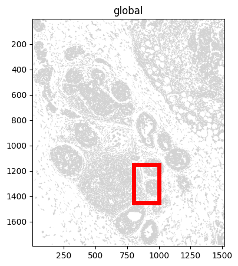
[6]:
def crop(ws):
return ws.query.bounding_box(
axes=["x", "y"],
min_coordinate=[bb_xmin, bb_ymin],
max_coordinate=[bb_xmax, bb_ymax],
target_coordinate_system="global",
)
sdata_xenium = crop(sdata_xenium_ws)
sdata_bidcell = crop(sdata_bidcell_ws)
sdata_proseg = crop(sdata_proseg_ws)
Initialize SegTraQ objects#
Next, we initialize SegTraQ objects, the core interface for computing SegTraQ metrics. During initialization, all inputs are are validated via validate_spatialdata(). Don’t worry if you do not know which parameters you need up front; just put in your spatialdata object, and SegTraQ will tell you which arguments are wrong/missing.
The four segmentation methods apply different filters to the points prior to segmentation. Proseg and BIDCell remove control probes (e.g. NegControlProbe, Intergenic_Region) before segmentation. In addition, Proseg and BIDCell exclude transcripts with a quality value (qv, the Xenium per-transcript decoding quality score) < 20.
For a fair comparison of metrics, like the percentage of unassigned transcripts, across methods, we subset the transcripts to include only gene-specific probes with qv ≥ 20. This is also compatible with the preprocessing for the cell feature matrix by 10x Genomics.
[7]:
st_xenium = segtraq.SegTraQ(
sdata_xenium, images_key="image", tables_centroid_x_key="x_centroid", tables_centroid_y_key="y_centroid"
)
st_bidcell = segtraq.SegTraQ(
sdata_bidcell,
images_key="image",
points_background_id=0,
tables_centroid_x_key="centroid_x",
tables_centroid_y_key="centroid_y",
)
st_proseg = segtraq.SegTraQ(
sdata_proseg,
images_key="image",
points_background_id=0,
tables_area_key=None,
tables_centroid_x_key="centroid_x",
tables_centroid_y_key="centroid_y",
)
Load reference scRNA-seq data and transfer labels#
To evaluate how SegTraQ metrics differ between cell types, we first transfer labels from the reference scRNA-seq dataset to the spatial data using segtraq.run_label_transfer.
[8]:
# Load scRNA-seq data
adata_ref = ad.read_h5ad("../../data/xenium_5K_data/BC_scRNAseq_Janesick.h5ad")
For easier access, we store the SpatialData object into a dictionary.
[9]:
st_dict = {"xenium": st_xenium, "bidcell": st_bidcell, "proseg": st_proseg}
[10]:
# Transfer labels
for _method, st in st_dict.items():
st.run_label_transfer(adata_ref, ref_cell_type="celltype_major", ref_raw_counts_layer="raw", inplace=True)
We can visualize the spatial data and color cell masks by transferred labels using spatialdata-plot.
[11]:
# Define color palette for plotting
col_celltype = {
"T": "#fb8072",
"B": "#bc80bd",
"macro": "#910290",
"dendritic": "#fdb462",
"mast": "#959059",
"perivas": "#fed9a6",
"endo": "#a6cee3",
"myoepi": "#2782bb",
"DCIS1": "#3c7761",
"DCIS2": "#66a61e",
"tumor": "#66c2a5",
"stromal": "#d45943",
"Unknown": "#808080",
}
Cells with a transcripts count < 10 and a gene count < 5 are not considered in label transfer and their returned transferred_cell_type returns np.nan, and missing values are subsequently replaced with the label “Unknown”.
[12]:
# Replace NaN with Unknown for plotting
for _method, st in st_dict.items():
s = st.sdata.tables["table"].obs["transferred_cell_type"]
if pd.api.types.is_categorical_dtype(s):
s = s.cat.add_categories(["Unknown"])
st.sdata.tables["table"].obs["transferred_celltype_plot"] = s.fillna("Unknown")
[13]:
plt.style.use("dark_background")
[14]:
def feature_spatial_plot(sdata, shapes_key, feature, col_palette, method):
axes = plt.subplots(1, 2, figsize=(10, 5), constrained_layout=True)[1].flatten()
# compute per-cell color
labels = sdata.tables["table"].obs[feature].unique().astype(str).tolist()
cols = [col_palette[lab] for lab in labels]
# Dapi image
sdata.pl.render_images("image").pl.show(ax=axes[0], title=f"{method}: DAPI image", coordinate_systems="global")
# Plot - Cell boundaries
sdata.tables["table"].obs["region"] = shapes_key
sdata.set_table_annotates_spatialelement("table", region=shapes_key)
sdata.pl.render_shapes(shapes_key, color=feature, palette=cols, groups=labels).pl.show(
ax=axes[1], title=f"{method}: Cell masks colored by {feature}", coordinate_systems="global"
)
10 Xenium MultiModal Cell Segmentation
[15]:
feature_spatial_plot(st_xenium.sdata, "cell_boundaries", "transferred_celltype_plot", col_celltype, "xenium")
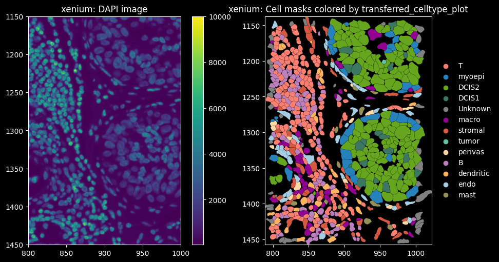
BIDCell Segmentation
[16]:
feature_spatial_plot(st_bidcell.sdata, "cell_boundaries", "transferred_celltype_plot", col_celltype, "BIDCell")
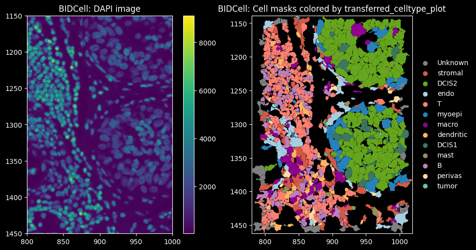
Proseg Segmentation
[17]:
feature_spatial_plot(st_proseg.sdata, "cell_boundaries_z1", "transferred_celltype_plot", col_celltype, "Proseg")
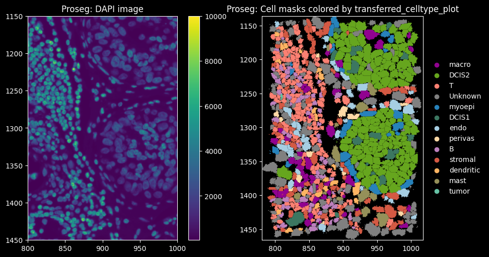
The dominant cell types are DCIS2, T and B cells. Proseg has the highest proportion of cells assigned to “Unknown”, i.e. transcript counts <10 and gene_counts <5.
[18]:
method_dfs = []
for method, st in st_dict.items():
df = st.sdata["table"].obs["transferred_celltype_plot"].value_counts(normalize=True).reset_index()
df.columns = ["celltype", "proportion"]
df["method"] = method
method_dfs.append(df)
plot_df = pd.concat(method_dfs, ignore_index=True)
plot_wide = plot_df.pivot(index="method", columns="celltype", values="proportion").fillna(0)
method_order = ["xenium", "bidcell", "proseg"]
plot_wide = plot_wide.loc[method_order]
fig, ax = plt.subplots(figsize=(2, 4))
plot_wide.plot(kind="bar", stacked=True, color=[col_celltype.get(c, "grey") for c in plot_wide.columns], ax=ax)
ax.set_ylabel("Proportion")
ax.set_xlabel("Method")
# Legend text in white
legend = ax.legend(title="Cell type", bbox_to_anchor=(1.05, 1), loc="upper left", frameon=False)
fig.tight_layout()
plt.show()
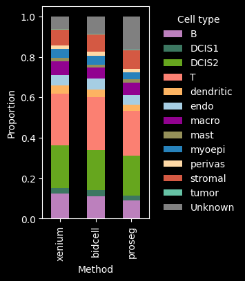
Running SegTraQ QC metrics#
Now the data is ready to compute SegTraQ QC metrics. Below we demonstrate how to run the individual modules.
Baseline module#
The baseline (bl) module computes basic quality-control metrics such as the number of cells, the percentage of unassigned transcripts, and the number of transcripts and genes per cell. When inplace=True, global metrics are stored in the uns slot, and per-cell metrics are stored in the obs slot of the table within the SpatialData object.
[19]:
for method, st in st_dict.items():
st.bl.num_cells(inplace=True)
st.bl.perc_unassigned_transcripts(inplace=True)
st.bl.transcripts_per_cell()
st.bl.genes_per_cell()
st.bl.mean_transcripts_per_gene_per_cell()
num_cells = st.sdata.tables["table"].uns["num_cells"]
p_unassigned = st.sdata.tables["table"].uns["perc_unassigned_transcripts"]
mean_tx = st.sdata.tables["table"].obs["transcript_count"].mean()
mean_gn = st.sdata.tables["table"].obs["gene_count"].mean()
mean_tgc = st.sdata.tables["table"].obs["mean_transcripts_per_gene"].mean()
print(f"\n{method}")
print(f"#cells: {num_cells}; %unassigned: {p_unassigned}")
print(f"mean #transcripts: {mean_tx}; mean #genes: {np.mean(mean_gn)}")
print(f"mean #transcripts per gene per cell: {mean_tgc}")
xenium
#cells: 751; %unassigned: 7.701023026425406
mean #transcripts: 110.6444740346205; mean #genes: 91.77762982689747
mean #transcripts per gene per cell: 1.129141779055404
bidcell
#cells: 760; %unassigned: 8.024574774194265
mean #transcripts: 108.93157894736842; mean #genes: 90.1078947368421
mean #transcripts per gene per cell: 1.1083750146793525
proseg
#cells: 745; %unassigned: 0.8153109622668755
mean #transcripts: 119.7489932885906; mean #genes: 94.57718120805369
mean #transcripts per gene per cell: 1.1291160754325535
The number of detected cells is comparable across Xenium, BIDCell, and Proseg. Proseg leaves the smallest fraction of transcripts unassigned (0.81%). The number of transcripts and genes per cell can be visualized per cell type, as shown below.
[20]:
# method for visualization
def boxplot_per_celltype(st_dict, feature, q=1):
dfs = []
for method, st in st_dict.items():
obs = st.sdata["table"].obs[st.sdata["table"].obs["transferred_cell_type"].notna()]
tmp = obs[["transferred_cell_type", feature]].copy()
tmp["method"] = method
dfs.append(tmp)
df = pd.concat(dfs, ignore_index=True)
df = df[(df[feature] <= df[feature].quantile(q))]
fig, ax = plt.subplots(figsize=(15, 5))
sns.boxplot(
data=df,
x="transferred_cell_type",
y=feature,
hue="method",
showcaps=True,
showfliers=False,
palette="Set2",
ax=ax,
)
fig.tight_layout()
plt.show()
Proseg yields the highest mean number of transcripts per cell, driven by increased transcript detection in DCIS2 and T, B and stromal cells, which constitute the dominant cell populations in the dataset. In contrast, Proseg detects fewer transcripts in some of the less abundant cell types, such as DCIS1 and myoepithelial cells.
[21]:
boxplot_per_celltype(st_dict, "transcript_count")
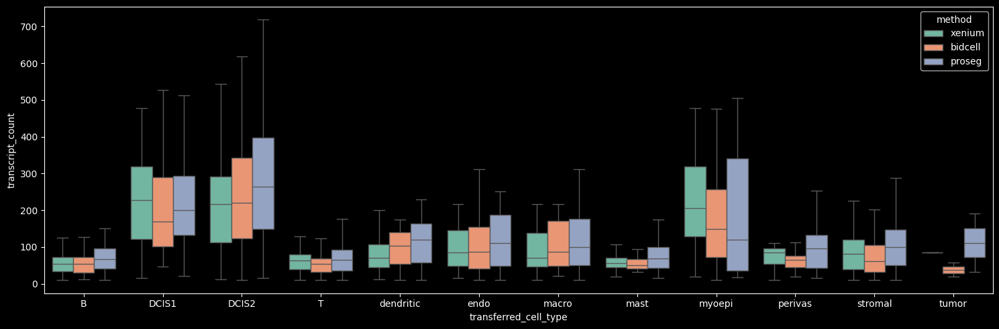
The number of genes detected per cell correlates strongly with the number of transcripts per cell.
[22]:
boxplot_per_celltype(st_dict, "gene_count")
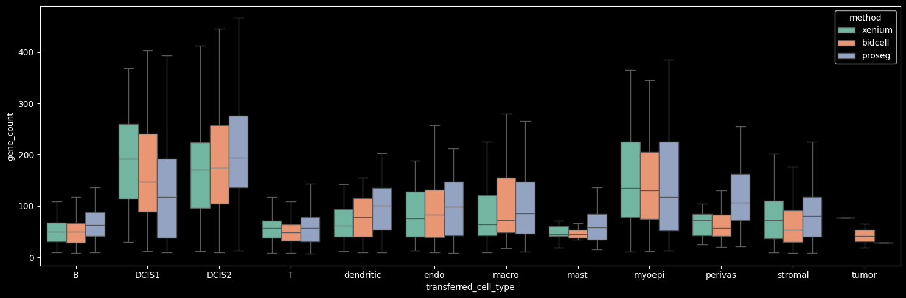
On average, the number of transcripts per gene per cell is approximately 1, indicating that across methods we detect roughly one to two transcripts per gene per cell. Among the methods, Proseg shows the highest mean number of transcripts per gene per cell when the Unknown cluster (cells with transcript counts < 10 and gene counts < 5) is excluded.
Interestingly, Proseg detects more transcripts per gene per cell across all cell types, even in cases where the total transcript and gene counts per cell are lower, e.g., DCIS1 and myoepithelial cells. This pattern suggests that transcripts are concentrated among fewer genes per cell, potentially reflecting more homogeneous within-cell expression profiles (i.e. reduced gene-level variability).
[23]:
boxplot_per_celltype(st_dict, "mean_transcripts_per_gene")
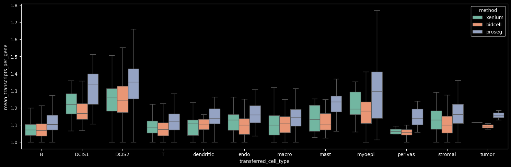
The baseline module also facilitates the computation of morphological features.
[24]:
for _method, st in st_dict.items():
st.bl.morphological_features(n_jobs=8)
[25]:
features = [
"cell_area",
"perimeter",
"circularity",
"solidity",
"convexity",
"elongation",
"eccentricity",
"compactness",
]
# Collect features into one dataframe
all_feats = []
for method, st in st_dict.items():
obs = st.sdata["table"].obs[st.sdata["table"].obs["transferred_cell_type"].notna()]
feat = obs[features]
tmp = feat.copy()
tmp["method"] = method
all_feats.append(tmp)
df = pd.concat(all_feats, ignore_index=True)
df["method"] = df["method"].astype(str)
feature_cols = [c for c in df.columns if c != "method"]
fig, ax = plt.subplots(2, 6, figsize=(6 * 4, 2 * 3))
ax = ax.flatten()
for i, feat_name in enumerate(feature_cols):
sns.kdeplot(data=df, x=feat_name, hue="method", palette="Set2", common_norm=False, fill=False, ax=ax[i])
ax[i].set_title(f"Distribution of {feat_name}")
ax[i].set_xlabel(feat_name)
ax[i].set_ylabel("Density")
fig.tight_layout()
plt.show()
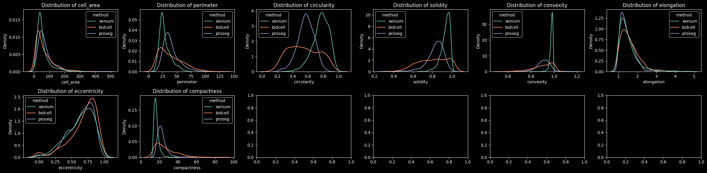
Xenium detects rounder cells, characterized by higher circularity and solidity, while BIDCell recovers a wider distribution of cell shapes, including both low and high circularity and solidity. BIDCell incorporates a loss term enforcing cell type–specific elongation, which may explain the detection of less circular cell shapes. Notably, the same cell types specified as elongated during training (perivascular, myoepithelial, stromal, and endothelial cells) also exhibit the highest median elongation in the results, highlighting the strong influence of the prior on the inferred cell shapes.
[26]:
obs = st_bidcell.sdata["table"].obs[st_bidcell.sdata["table"].obs["transferred_cell_type"].notna()]
df = obs[["transferred_cell_type", "elongation"]]
medians = df.groupby("transferred_cell_type").median()
order = medians.sort_values(by="elongation").index
fig, ax = plt.subplots(figsize=(10, 3))
sns.boxplot(
data=df,
x="transferred_cell_type",
y="elongation",
order=order,
showcaps=True,
showfliers=False,
palette=col_celltype,
ax=ax,
)
ax.set_title("BIDCell - cell shape representation")
fig.tight_layout()
plt.show()
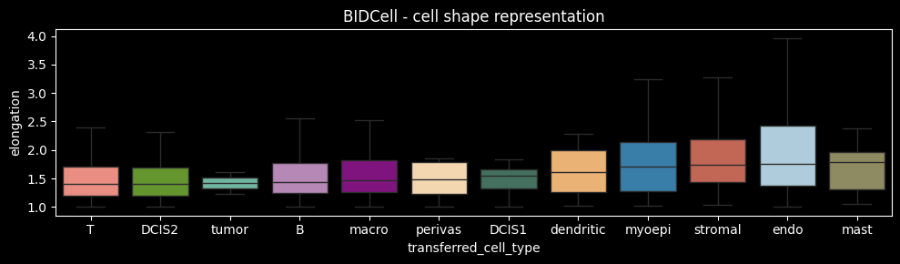
Proseg, in contrast, does not rely solely on membrane stainings. Instead, it incorporates transcript positions, which may extend beyond the membrane boundary due to diffusion. This may explain why perivascular or myoepithelial cells do not appear among the most elongated cell types. Importantly, a segmentation mask that accurately delineates cell geometry may still misassign transcripts (e.g. due to diffusion or spatial overlap), while a mask that poorly represents cell shape may nonetheless correctly assign transcripts. Therefore, it is essential to evaluate not only the geometric accuracy of cell shapes but also the accuracy of transcript assignment to cells. We will compute metrics to evaluate transcript assignment accuracy below.
[27]:
obs = st_proseg.sdata["table"].obs[st_proseg.sdata["table"].obs["transferred_cell_type"].notna()]
df = obs[["transferred_cell_type", "elongation"]]
medians = df.groupby("transferred_cell_type").median()
order = medians.sort_values(by="elongation").index
fig, ax = plt.subplots(figsize=(10, 3))
sns.boxplot(
data=df,
x="transferred_cell_type",
y="elongation",
order=order,
showcaps=True,
showfliers=False,
palette=col_celltype,
ax=ax,
)
ax.set_title("Proseg - cell shape representation")
fig.tight_layout()
plt.show()
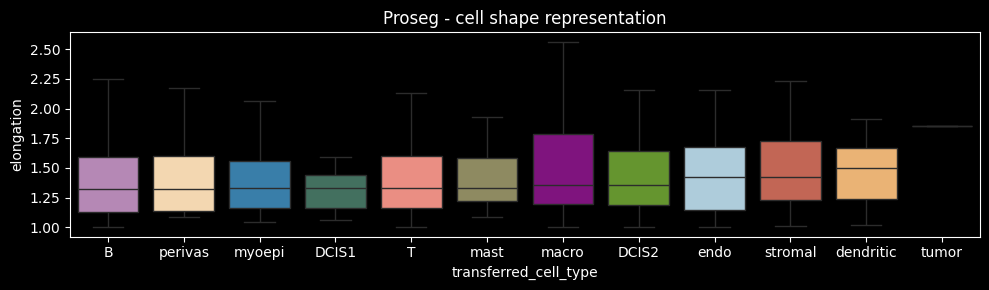
Clustering stability module#
The clustering stability (cs) module provides metrics for assessing the stability of clustering results across different resolutions and random subsets of genes.
Let`s first perform Leiden clustering and visualize the clusters in the UMAP space.
[28]:
fig, axs = plt.subplots(1, 3, figsize=(15, 5))
axs = axs.flatten()
for i, (method, st) in enumerate(st_dict.items()):
adata = st.sdata.tables["table"].copy()
adata.layers["counts"] = adata.X
sc.pp.normalize_total(adata, inplace=True)
sc.pp.log1p(adata)
sc.pp.pca(adata)
sc.pp.neighbors(adata)
sc.tl.umap(adata)
sc.tl.leiden(adata, flavor="igraph", n_iterations=2)
sc.pl.umap(
adata,
color="leiden",
palette="Set2",
ax=axs[i],
show=False,
title=method,
)
plt.tight_layout()
plt.show()
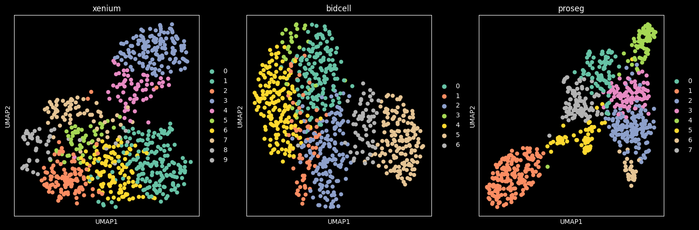
Next, we compute clustering stability metrics and plot these.
[29]:
ccds = {}
silhouette_scores = {}
purities = {}
aris = {}
for method, st in st_dict.items():
ccds[method] = st.cs.cluster_connectedness()
silhouette_scores[method] = st.cs.silhouette_score()
purities[method] = st.cs.purity()
aris[method] = st.cs.adjusted_rand_index()
[30]:
results_df = pd.DataFrame(
{
"Method": list(ccds.keys()),
"Connectedness": list(ccds.values()),
"Silhouette Score": list(silhouette_scores.values()),
"Purity": list(purities.values()),
"ARI": list(aris.values()),
}
)
[31]:
fig, ax = plt.subplots(figsize=(4, 3))
sns.scatterplot(
data=results_df,
x="Connectedness",
y="Silhouette Score",
hue="Method",
style="Method",
s=100,
palette="Set2",
ax=ax,
)
ax.set_xlabel("Connectedness (↑)")
ax.set_ylabel("Silhouette Score (↑)")
ax.set_title("Connectedness vs. Silhouette Score")
ax.set_xlim(0, 1)
ax.set_ylim(-1, 1)
legend = ax.legend(title="Method", frameon=False, bbox_to_anchor=(1.05, 1), loc="upper left")
fig.tight_layout()
plt.show()
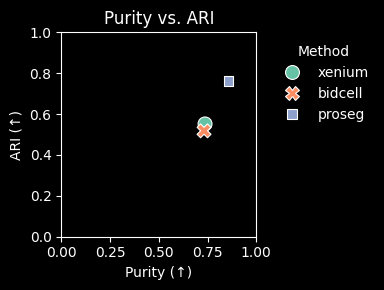
[32]:
fig, ax = plt.subplots(figsize=(4, 3))
sns.scatterplot(
data=results_df,
x="Purity",
y="ARI",
hue="Method",
style="Method",
s=100,
palette="Set2",
ax=ax,
)
ax.set_xlabel("Purity (↑)")
ax.set_ylabel("ARI (↑)")
ax.set_title("Purity vs. ARI")
ax.set_xlim(0, 1)
ax.set_ylim(0, 1)
legend = ax.legend(title="Method", frameon=False, bbox_to_anchor=(1.05, 1), loc="upper left")
fig.tight_layout()
plt.show()
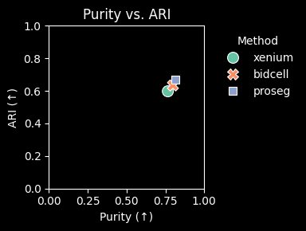
Proseg achieves the highest adjusted Rand index (ARI) and clustering purity, as well as the lowest mean cosine distance. Together, these results suggest that Proseg retrieves the most internally consistent expression profiles and could indicate less contaminated single cell signatures.
The silhouette score can also be computed on the transferred labels. We will first visualize transferred labels in the UMAP space.
[33]:
fig, axs = plt.subplots(1, 3, figsize=(15, 5))
axs = axs.flatten()
for i, (method, st) in enumerate(st_dict.items()):
adata = st.sdata.tables["table"].copy()
# normalizing and log-transforming the counts
sc.pp.normalize_total(adata, inplace=True)
sc.pp.log1p(adata)
# computing a PCA and neighbors
sc.pp.pca(adata)
sc.pp.neighbors(adata)
sc.tl.umap(adata)
sc.pl.umap(
adata,
color="transferred_cell_type",
palette=col_celltype,
ax=axs[i],
show=False,
title=method,
)
plt.tight_layout()
plt.show()
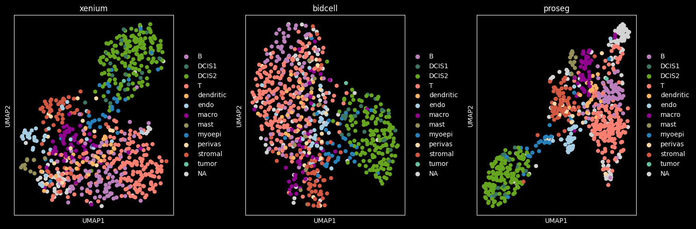
Proseg achieves the highest silhouette score for the transferred labels, indicating higher intra-cluster coherence and improved inter-cluster separation; this is also visually consistent with the UMAP embedding.
[34]:
silhouette_scores_labels = {}
for method, st in st_dict.items():
silhouette_scores_labels[method] = st.cs.silhouette_score(cell_type_key="transferred_cell_type")
silhouette_scores_labels
[34]:
{'xenium': -0.027014529332518578,
'bidcell': -0.02936074323952198,
'proseg': 0.03824570029973984}
Region similarity module#
While individual genes may exhibit subcellular localization patterns, the overall distribution of transcripts, when averaged across genes, is expected to be relatively smooth and approximately uniform within a cell. Based on this assumption, the region similarity module evaluates the similarity of gene expression profiles across different subcellular compartments. Deviations from this expected intra-cellular consistency can serve as indicators of transcript contamination originating from neighboring cells.
Intersection over Union (IoU)
Proseg shows the lowest intersection over union (IoU) between the cell and nucleus. It relies on transcript assignment rather than explicit morphology-based segmentation, allowing transcripts that are repositioned outside the cell membrane (e.g. due to transcript diffusion) to be reassigned to the cell of origin. This often results in larger inferred cell areas (or perimeters, as shown above) relative to the nucleus or less aligned cell and nucleus shapes, leading to lower cell–nucleus IoU values.
[35]:
plt.style.use("default")
def plot_IoU(sdata, shapes_key, method, ax):
# note that copy.deepcopy() can have unwanted effects on the attrs, hence sd.deepcopy() is preferred
sdata_plot = sd.deepcopy(sdata)
sdata_plot["table"] = sdata_plot["table"][(sdata_plot["table"].obs["iou"].notna())]
sdata_plot.tables["table"].obs["region"] = shapes_key
sdata_plot.set_table_annotates_spatialelement("table", region=shapes_key)
sdata_plot.pl.render_shapes(
element="nucleus_boundaries",
fill_alpha=0.2,
outline_alpha=1.0,
outline_width=0.5,
outline_color="black",
).pl.render_shapes(
element=shapes_key,
color="iou",
cmap="viridis",
fill_alpha=0.5,
outline_alpha=1.0,
outline_width=0.5,
outline_color="black",
).pl.show(ax=ax, title=f"{method}: Overlay of nuclei and cell masks colored by IoU", colorbar=True)
[36]:
fig, axes = plt.subplots(1, 3, figsize=(15, 5), constrained_layout=True)
for i, (method, st) in enumerate(st_dict.items()):
st.rs.match_nuclei_to_cells(n_jobs=-1)
plot_IoU(st.sdata, "cell_boundaries", method, axes[i])
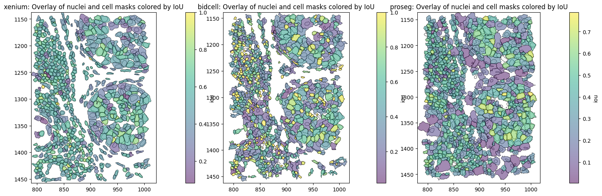
Similarity between expression in cell and nucleus
Once, the “best-matching” nucleus is determined for each cell based on IoU, we can compute the similarity between cell and nuclear expression.
[37]:
for _method, st in st_dict.items():
st.rs.similarity_nucleus_cell(n_jobs=-1)
When the intersection-over-union (IoU) between the cell and nucleus masks is high, a large fraction of transcripts assigned to the cell also overlap with the nucleus. Consequently, the returned similarity metric is strongly correlated with IoU.
[38]:
def plot_correlation(sdata, method, ax):
obs = sdata.tables["table"].obs
df = obs[["iou", "similarity_nucleus_cell"]].dropna()
_slope, _intercept, r_value, _p_value, _std_err = linregress(df["iou"], df["similarity_nucleus_cell"])
r_squared = r_value**2
ax = sns.regplot(
data=df,
x="iou",
y="similarity_nucleus_cell",
ax=ax,
scatter_kws={"alpha": 0.6},
line_kws={"color": "red"},
ci=95,
)
ax.text(
0.05,
0.95,
f"$R^2 = {r_squared:.3f}$",
transform=ax.transAxes,
verticalalignment="top",
fontsize=12,
bbox=dict(boxstyle="round,pad=0.3", facecolor="white", alpha=0.8),
)
ax.set_xlabel("IoU")
ax.set_ylabel("Cosine similarity between cell and nucleus intersection")
ax.set_title(f"{method}: Cell-nuc similarity vs. IoU with Regression Line")
ax.grid(True)
[39]:
fig, axes = plt.subplots(1, 3, figsize=(15, 5), constrained_layout=True)
for i, (method, st) in enumerate(st_dict.items()):
plot_correlation(st.sdata, method, axes[i])
plt.show()
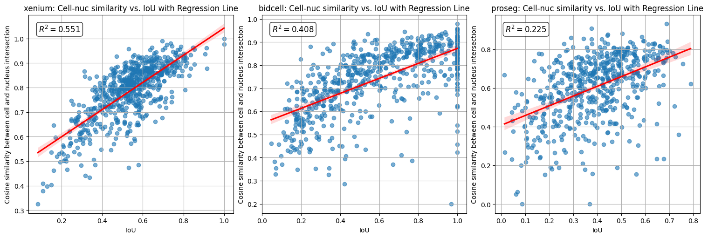
A more informative metric is therefore the similarity in gene expression between the region where the cell and nucleus overlap and the remaining cell area, corresponding to the cytoplasm.
[40]:
for _method, st in st_dict.items():
st.rs.similarity_nucleus_cytoplasm(n_jobs=-1)
This metric shows higher values for Xenium and Proseg, which may indicate reduced transcript contamination in the cytoplasmic compartment.
[41]:
def density_plot_feature(sdata_dict, features):
all_feats = []
for method, st in sdata_dict.items():
feat = st.sdata["table"].obs[features]
tmp = feat.copy()
tmp["method"] = method
all_feats.append(tmp)
df = pd.concat(all_feats, ignore_index=True)
df["method"] = df["method"].astype(str)
feature_cols = [c for c in df.columns if c != "method"]
plt.style.use("dark_background")
n = len(feature_cols)
n_cols = min(3, n)
n_rows = np.ceil(n / n_cols).astype(int)
fig, axes = plt.subplots(
n_rows,
n_cols,
figsize=(4 * n_cols, 2 * n_rows),
)
axes = np.atleast_1d(axes).ravel()
for ax, feat in zip(axes, feature_cols, strict=False):
sns.kdeplot(data=df, x=feat, hue="method", common_norm=False, palette="Set2", fill=False, ax=ax)
fig.tight_layout()
plt.show()
[42]:
features = ["similarity_nucleus_cytoplasm"]
density_plot_feature(st_dict, features)
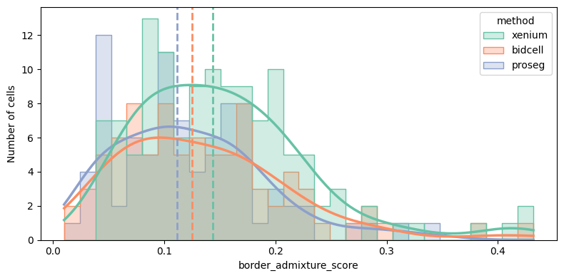
*Similarity of gene expression between
cell center and cell border and
cell border and cell neighborhood*
To better disentangle biology from technical contamination, we introduced a metric that evaluates expression similarity between the cell center and the cell border. The underlying assumption is that although genes may differ between nucleus and cytoplasm, their expression should not systematically differ between the interior cytoplasm and the cell periphery. To quantify potential contamination, we compare the expression similarity of
the cell border and its eroded cell center and
the cell border and its local neighborhood.
[43]:
for _method, st in st_dict.items():
st.rs.similarity_border_neighborhood()
st.rs.similarity_center_border()
[44]:
features = ["similarity_center_border", "similarity_border_neighborhood"]
density_plot_feature(st_dict, features)
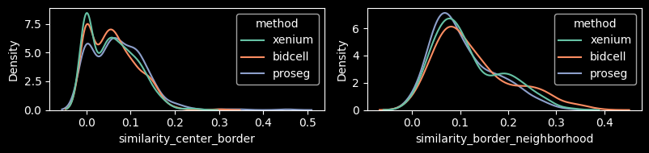
Admixture (contamination) of the cell border
A low similarity_center_border or high similarity_border_neighborhood does not necessarily represent contamination. To evaluate the contamination of the cell border robustly, we compute the the border_admixture_score, which explicitly models the border as a mixture of center and neighborhood expression, and estimates how much better this mixture explains the border compared to the center alone.
[45]:
for _method, st in st_dict.items():
st.rs.border_admixture_score()
A high border_admixture_score means the border is better explained by the mixture than by the center alone. The density plot below shows that Proseg and BIDCell shows the least contamination. It is important to note that Proseg is a transcript-assignment method, meaning that transcripts located near or even within a cell boundary are not necessarily assigned to that cell. When computing the border admixture score, transcripts in the border region that are assigned to other cells must
therefore be excluded. This can increase sparsity and noise in the data and may lead to less stable estimates.
[46]:
features = ["border_admixture_score"]
density_plot_feature(st_dict, features)
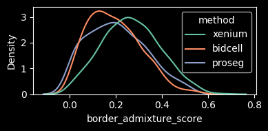
While it is important to consider metrics that do not depend on the availability of high-quality reference scRNA-seq data—and therefore do not rely on the performance of label transfer—a limitation of the region similarity module is that it cannot distinguish between homogeneous and heterogeneous cellular neighborhoods. In homogeneous neighborhoods, a high border_admixture_score does not necessarily indicate contamination. Nevertheless, when comparing methods globally or on a cell-type
level, this is a useful unsupervised contamination metric that does not rely on reference scRNA-seq data.
[47]:
boxplot_per_celltype(st_dict, "border_admixture_score")
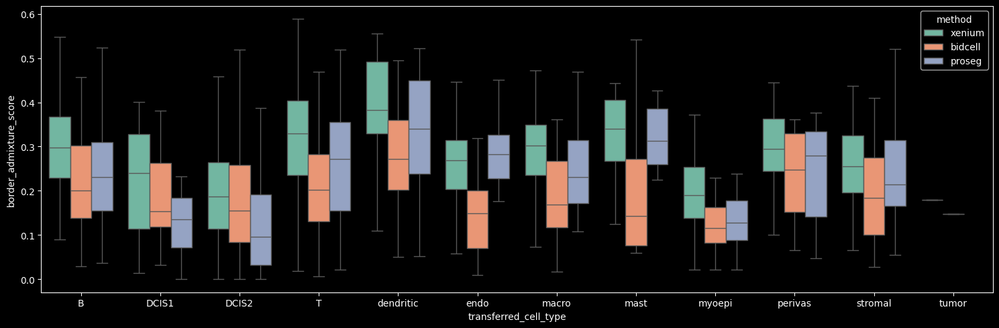
Supervised module#
The sp (supervised) module provides metrics to evaluate how well cell profiles in a spatial transcriptomics dataset agree with a reference single-cell RNA-seq (scRNA-seq) dataset with cell type annotations.
Unlike scRNA-seq, contamination in spatial transcriptomics measurements mostly originates from the local tissue context.
By comparing spatial expression profiles to a high-quality scRNA-seq reference, the supervised module aims to quantify this mismatch. Specifically, we compute metrics that measure:
how well each spatial cell matches its expected cell type,
how much its expression resembles other (neighboring) cell types, and
if it is possible to predict that a cell of one cell type is adjacent to a different cell type.
To obtain cell-type specific marker genes, we define positive and negative markers in the annotated scRNA-seq via markers_from_reference.
Computing cell-type specific markers
[48]:
markers = {}
for method, st in st_dict.items():
markers[method] = st.markers_from_reference(
adata_ref,
ref_cell_type="celltype_major",
ref_raw_counts_layer="raw",
n_jobs=16,
)
A list of positive and negative markers computed for each cell type is shown below. We will use xenium for demonstration.
[49]:
for cell_type, sign in markers["xenium"].items():
pos = sign["positive"]
neg = sign["negative"]
print(f"{cell_type} | positive: {', '.join(pos)}")
print(f"{cell_type} | negative: {', '.join(neg)}\n")
B | positive: MS4A1, PAX5, BANK1, FCRL1, FCRL2, BLK, AIM2, CD19, TNFRSF13B, POU2AF1, P2RX5, SCIMP, CD79A, CD79B, TNFRSF13C, FCRL5, POU2F2, FCRLA, STAP1, CD22, COL4A3, PARP15, NIBAN3, SP140, CR1, SPIB, FCMR, ADAM28, PLCG2, TLR6, ST6GAL1, CD27, CD52, DERL3, KCNN4, ITGB7, CNR2, COL4A4, FCRL3, CD40, TNFRSF17, IRF4, ZBP1, PTK2B, TNFAIP8, BLNK, COCH, CCDC141, NCF1, CYSLTR1, CD38, SLAMF6, CCR6, ITGAL, PTPN6, PIM2, SP110, ATM, PDK1, CASP10, LRRK2, KCNA3, NLRP1, FCGR2B, TLR1, SLAMF1, GPR174, CDK14, JAK3, RELT, LPXN, GRK5, SYVN1, TENT5C, BCL2, SMCHD1, PIK3CG, SLAMF7, CD83, REL, TRAF5, SMAP2, NLRC5, STX7, ANKRD13A, NCOA3
B | negative: ABCA10, ABCA8, ABCC12, ABCC8, ABCC9, ABI3BP, ABTB2, AC007906.2, ACVRL1, ADAM12, ADAM33, ADAMDEC1, ADAMTS1, ADAMTS12, ADAMTS14, ADAMTS2, ADAMTS4, ADAMTS5, ADCYAP1, ADGRE2, ADGRL4, ADORA2B, ADORA3, ADRA1B, ADRA2A, ADTRP, AFAP1L2, AGR3, AIF1, ALDH7A1, ALPK3, ANGPT1, ANGPTL2, ANXA3, ANXA8, APLNR, AQP1, ASPN, AVPR1A, AXIN2, AXL, BAALC, BARX2, BCL6B, BDKRB2, BMP2, BMPR1B, BNC2, BPIFB1, BRINP1, C1QTNF1, C3AR1, C4B, C5AR1, CACNA1B, CACNA2D1, CACNG4, CADM3, CALB2, CALCRL, CALML3, CARD10, CARD14, CARD9, CAVIN2, CAVIN3, CCDC102B, CCL14, CCL19, CCL22, CCN3, CCN4, CCR4, CCR5, CD1E, CD209, CD248, CD274, CD302, CD33, CD40LG, CD7, CD8A, CDH13, CDH23, CDH3, CDH5, CDH6, CEBPA, CELSR3, CES1, CFC1, CFH, CGNL1, CHAD, CLCN5, CLDN5, CLEC10A, CLEC12A, CLEC14A, CLEC4C, CLEC5A, CLEC7A, CLGN, CLIC3, CMA1, CMKLR1, CMYA5, CNN1, CNRIP1, CNTNAP1, COL10A1, COL17A1, COL7A1, COLEC12, CPVL, CPXM2, CRB2, CREB5, CSF1, CSF2RA, CSF3R, CSPG4, CST7, CTLA4, CTSG, CTSW, CUX2, CX3CL1, CX3CR1, CXCL2, CXCR6, CYP27A1, DCLK1, DDR2, DKK3, DLK1, DLL4, DLX4, DMD, DNAH10, DNAH7, DNASE1L3, DNM1, DPT, DPY19L2, DSC3, DSG3, EBF2, ECRG4, EDN1, EDNRA, EGF, EGFR, ELN, ENPP2, ENPP3, ENTPD2, EPB41L3, EPHA2, EPHB1, EREG, ERG, ERRFI1, ERVMER34-1, ESM1, ETV1, F13A1, F2R, F2RL3, F3, FAM107A, FAM183A, FAP, FAT2, FAT4, FBLN2, FBLN5, FCER1A, FCGR3A, FES, FGF1, FGF2, FGF7, FGFR2, FILIP1L, FLRT3, FLT1, FLT3, FLT4, FMN1, FMOD, FOLH1, FOLR2, FOXC2, FOXD2, FPR1, FREM1, FRZB, FSCN1, FST, FZD4, GABRD, GABRP, GHR, GIMAP5, GIMAP8, GJC1, GLI2, GLT8D2, GNAI1, GPR39, GPR4, GPRC5B, GRAMD2B, GRIK3, GRIK4, GRP, GUCY1A2, GYG2, GZMA, GZMB, GZMK, HAS2, HAVCR2, HBEGF, HCK, HDC, HEYL, HGF, HLX, HMCN1, HOXA5, HOXD10, HOXD9, HPGD, HPGDS, HPSE, HPSE2, HS3ST3A1, HS6ST2, HSD11B2, ICOS, ID4, IDO1, IGF1, IL17RB, IL18, IL18R1, IL1RL1, IL2RB, IL33, IL34, IL3RA, IL6R, INHBA, IRS2, IRX1, ITGA2, ITGA2B, ITGA5, ITGA7, ITIH5, ITPKA, JAG1, JAM2, KANK2, KCNF1, KCNJ8, KCNK10, KCNK15, KCNK17, KCNMA1, KCNMB1, KDR, KIT, KLHL13, KLK10, KLK6, KLRD1, KLRG1, LAMB3, LAMC2, LAMP3, LCN2, LCNL1, LDB3, LEF1, LGR4, LIF, LILRA4, LILRB2, LILRB4, LILRB5, LOX, LOXL2, LPAR1, LPL, LRG1, LRRC15, LTK, LURAP1, LZTS1, MAOB, MAP1A, MAP1B, MAP2, MAP3K7CL, MAPT, ME1, MECOM, MEIS2, MERTK, MET, MFAP5, MLXIPL, MME, MMRN2, MNDA, MPP1, MRC1, MS4A2, MSR1, MSTN, MTNR1B, MUC16, MUC5B, MYCL, MYH11, MYLK, NAV2, NCCRP1, NCF2, NGFR, NKX3-1, NLRP3, NOS1AP, NOS3, NOSTRIN, NPNT, NPR1, NPY1R, NR4A3, NR5A2, NRN1, NRP2, NTRK2, NXN, OLFM1, OLFML3, OLR1, OPRD1, OSGIN1, OXTR, P2RX7, P2RY13, P2RY14, P2RY2, P2RY6, PALMD, PAMR1, PCDH10, PCDH17, PCDH18, PDE10A, PDE2A, PDE3A, PDE5A, PDGFA, PDGFD, PDGFRA, PDGFRB, PDGFRL, PDLIM4, PDPN, PDZK1, PGF, PGR, PHEX, PHF21B, PHLDB2, PI16, PIEZO2, PILRA, PITX1, PLA2G7, PLAGL1, PLAUR, PLCE1, PLEKHH2, PLVAP, PLXDC1, PMAIP1, PODXL, POTEI, POTEJ, PPARG, PPP1R1C, PRDM6, PRF1, PRKCQ, PROCR, PROM1, PROX1, PRRX1, PTAFR, PTGDR, PTGES, PTGFRN, PTGIR, PTGIS, PTHLH, PTK7, PTPRB, PTPRM, RAI14, RASD1, RASSF4, RBMS3, RBPMS, RCAN2, RELN, RERG, RGS5, RIMS3, RIPK4, RNF180, RNF39, ROBO4, ROR2, RTN1, RUNX1T1, S100A1, SAMD5, SASH1, SCGB1D2, SCN9A, SDC2, SELP, SEPTIN4, SEPTIN5, SERPINA5, SERPINB5, SERPINE1, SFRP1, SH2D1A, SH2D2A, SH3RF2, SHANK3, SHD, SIGLEC1, SIGLEC9, SIM2, SIRPA, SLAMF8, SLC11A1, SLC18A2, SLC1A3, SLC2A9, SLC35G2, SLC6A1, SLC7A11, SLCO2A1, SLCO2B1, SLIT2, SLIT3, SMOC2, SMPD3, SNCA, SOD3, SORCS1, SOSTDC1, SOX10, SOX17, SOX18, SOX9, SPA17, SPATA18, SPOCK1, SPON1, SPON2, SPRY2, SRPX, STEAP4, SUGCT, SULF1, SVEP1, SYNPO2, TAL1, TBX2, TBXA2R, TCL1A, TDO2, TEK, TFAP2B, TFPI2, TGFBR3, TGM2, TH, THBD, THY1, TIE1, TIGIT, TLR2, TLR4, TLR9, TMEM119, TMEM255B, TMEM45B, TMEM98, TNFSF8, TNS2, TNS4, TP63, TPPP3, TPSG1, TREM2, TRH, TRIM29, TRO, TRPC6, TSPAN18, TSPAN7, TUBB2B, TUBB3, TUBB6, TWIST1, TWIST2, UBASH3A, UNC5A, VCAM1, VEGFC, VGLL3, VSIG4, VSNL1, VTCN1, WFDC1, WNT2, ZFHX4, ZNF683
DCIS1 | positive: BMPR1B, OPRD1, SCGB1D2, PITX1, CHAD, SLC16A1, DLX4, MUC16, EREG, PCDH10, ITGB6, AGR2, KCNF1, MUC5B, SPA17, CA12, S100A1, TMEM45B, POTEI, ESR1, SAPCD2, ME1, SLC12A2, ITGA3, CEACAM5, CACNG4, ROR2, IGFBP2, SOX9, TUBB3, GIPC1, SLC30A8, SERPINB5, PRKAR1A, BARX2, REEP6, CACNA1D, PIK3R2, HES6, C4B, CYP27A1, SMPD3, PDE10A, NQO1, VTCN1, SDC4, G6PD, AGR3, ENTPD2, HK2, SOD1, PDLIM4, FASN, IL17RB, FAAH, RIPK4, TDO2, NECTIN1, CFB, NTN4, P2RY2, DNAH7, THSD4, DTNA, SIAE, PLXNB1, RAPGEF5, NKX3-1, SPATA18, GRHL2, LASP1, MCM3AP, CASZ1, XBP1, PTK6, IGSF3, PPFIA3, LMX1B, SERPINA5, SASH1, SULF2, TNFRSF12A, TRIM29, SLC9A3R2, PLAT, CGNL1, ST14, CD151, MYO6, SLC7A11, NECTIN2, TRPM4, TNS4, KLF5, LDLR, VAV3, CMYA5, PADI2, ATP7B, ITGB4, CELSR3, FOXD2, STX1A, ABCA10, RMND1, WFS1, PRODH, OVOL2, CTNND2, VSTM2L, TUBD1
DCIS1 | negative: ABCA8, ABCC12, ABCC8, ABCC9, ABI3, ABI3BP, ABTB2, AC007906.2, ACVRL1, ADA, ADAM12, ADAM33, ADAMDEC1, ADAMTS12, ADAMTS14, ADAMTS4, ADAMTS5, ADCYAP1, ADGRE2, ADGRL4, ADORA2B, ADORA3, ADRA1B, ADRA2A, ADRB2, ADTRP, AIM2, ANGPT1, ANXA8, APLNR, APOBEC3D, ASPN, ATL1, AVPR1A, BANK1, BCL11B, BCL2A1, BCL6B, BDKRB2, BLK, BMP2, BMP6, BNC2, BPIFB1, BRINP1, C1QTNF1, C3AR1, CACNA1B, CALB2, CALCRL, CASP10, CAVIN2, CAVIN3, CCDC102B, CCDC141, CCL14, CCL19, CCN3, CCN4, CCR1, CCR4, CCR5, CD19, CD1C, CD1D, CD1E, CD209, CD22, CD226, CD247, CD27, CD274, CD28, CD302, CD33, CD38, CD3G, CD40, CD40LG, CD5, CD7, CD72, CD79A, CD79B, CD83, CD86, CDH13, CDH23, CDH5, CDH6, CFC1, CFH, CLDN5, CLEC10A, CLEC12A, CLEC14A, CLEC4C, CLEC5A, CLEC7A, CMA1, CMKLR1, CNR2, CNRIP1, CNTNAP1, COCH, COL10A1, COL4A3, COL4A4, COLEC12, CPVL, CPXM2, CR1, CRB2, CREB5, CSF2RA, CSF3R, CST7, CTLA4, CTSG, CTSW, CUX2, CX3CR1, CXCL2, CXCR3, CXCR6, CYSLTR1, DCLK1, DERL3, DLK1, DLL4, DNAH10, DNASE1L3, DNM1, DPT, DPY19L2, DTX1, EBF2, EDN1, EDNRA, EGF, ENOX1, ENPP2, ENPP3, EPB41L3, EPHB1, ERG, ERVMER34-1, ESM1, F2RL3, F7, FAM107A, FAP, FAT4, FCER1A, FCGR2B, FCMR, FCRL1, FCRL2, FCRL3, FCRL5, FCRLA, FES, FGF1, FGF2, FGF7, FGR, FILIP1L, FLI1, FLT1, FLT3, FLT4, FOLH1, FOLR2, FOXC2, FPR1, FREM1, FRZB, FSCN1, FUT7, GBP5, GHR, GIMAP5, GIMAP8, GJC1, GLI2, GPR174, GPR34, GPR39, GPR4, GRIK4, GUCY1A2, GYG2, GZMA, GZMB, GZMK, HAS2, HBEGF, HCK, HDC, HEYL, HGF, HLX, HMCN1, HOXA5, HOXD10, HOXD9, HPGD, HPGDS, HPSE, HPSE2, HS3ST3A1, HSPA6, ICAM2, ICOS, IDO1, IGF1, IL12RB1, IL18R1, IL1RL1, IL21R, IL2RB, IL33, IL3RA, IL6R, INHBA, IRF4, ITGA7, ITIH5, ITK, ITPKA, JAM2, KCNA3, KCNH6, KCNJ8, KCNK10, KCNK17, KCNN3, KDR, KIAA0408, KIT, KLK10, KLK6, KLRD1, KLRG1, LAIR1, LAMP3, LCK, LCN2, LCNL1, LDB3, LEF1, LIF, LILRA4, LILRB2, LILRB4, LILRB5, LMO2, LOX, LPAR1, LPL, LRRC15, LRRK2, LTK, LURAP1, LY96, LZTS1, MAP1A, MAP2, MAP3K7CL, MERTK, MFAP5, MLXIPL, MMRN2, MNDA, MPP1, MRC1, MS4A1, MS4A2, MTNR1B, NCCRP1, NCF1, NCF2, NIBAN3, NLRP3, NOS3, NOSTRIN, NPR1, NR4A3, NR5A2, NRN1, NRROS, OLR1, P2RX1, P2RX5, P2RX7, P2RY13, P2RY14, P2RY6, PARP15, PAX5, PCDH17, PCDH18, PCDH8, PDE2A, PDE3A, PDGFD, PDGFRL, PDPN, PGF, PGR, PHEX, PI16, PIEZO2, PIK3CG, PILRA, PLA2G7, PLCE1, POTEJ, POU2AF1, POU2F2, PPP1R1C, PRDM6, PRF1, PRICKLE1, PRKCQ, PROCR, PROX1, PTAFR, PTGDR, PTGES, PTGIR, PTGIS, PTGS1, PTPRB, RAI14, RASSF2, RASSF4, RCAN2, RECK, RELN, RGS5, RIMS3, ROBO4, RUNX1T1, S1PR1, SCIMP, SCN9A, SDC2, SDK2, SELP, SELPLG, SEMA7A, SEPTIN4, SFRP4, SH2D1A, SH2D2A, SH3RF2, SHANK3, SHD, SIGLEC1, SIGLEC6, SIGLEC9, SIM2, SLAMF1, SLAMF6, SLAMF7, SLAMF8, SLC11A1, SLC18A2, SLC1A3, SLC35G2, SLC6A1, SLC7A7, SLCO2A1, SLIT3, SMOC2, SNCA, SOD3, SOSTDC1, SOX17, SOX18, SOX5, SPIB, SPOCK1, SPON1, SRPX, STAP1, SUGCT, SVEP1, TAL1, TBX2, TBXA2R, TCL1A, TEK, TFAP2B, TGFBR3, TGM2, TH, THBD, THEMIS, TIE1, TIGIT, TLR1, TLR4, TLR6, TLR7, TLR9, TMEM119, TMEM255B, TNFRSF13B, TNFRSF13C, TNFRSF17, TNFSF8, TPSG1, TREML2, TRH, TRO, TRPC6, TSPAN18, TSPAN7, TUBB2B, TUBB6, TWIST1, TWIST2, UBASH3A, VCAM1, VEGFC, VGLL3, VSIG4, VSNL1, WFDC1, WNT2, WNT4, WNT5B, ZBP1, ZEB1, ZFHX4, ZNF683
DCIS2 | positive: BPIFB1, PDZK1, LRG1, DTNA, PLAT, AGR3, STEAP4, TSPAN8, NAT1, PPP1R1B, EEF1A2, PSD3, ESR1, NPY1R, SIM2, BAALC, CFB, TRH, CEACAM5, MUC1, TUBB3, AGR2, NOS1AP, PTK6, CCND1, GDF15, PRLR, SLC1A1, EGF, TUBB2A, GRIK3, KCNK15, THSD4, CLDN7, NECTIN2, HSPB1, GREB1, SERPINA5, PLCE1, LASP1, PBX1, FSIP1, PSMC5, HES4, PPM1D, NQO1, INPP4B, OCLN, ERBB3, XBP1, CHAD, MAP7, ABTB2, PMAIP1, MACC1, CFC1, ACE, FLRT3, CACNA1B, CELSR1, NOSTRIN, BDKRB2, PTGES, TPBG, LAMC2, AXIN2, TFPI2, TBX3, PTHLH, TLK2, DHCR7, OSGIN1, SIX1, FRAS1, KIAA0408, FIBCD1, TRIB3, TNNT2, MAPK15, F7, SMPDL3B, CTNND2, CCL22, EMP2, ANXA3, BCAM, GHR, MAPT, RERG, TCIM, SYTL2, LAD1, ADRA2A, COL4A5, ITGB4, EFS, NEBL, TACC2, DSG2, SEZ6L2, TSPAN13, FAM183A, RGL3, SOX18, WNT4, SOX2, FGFR4, DMKN, EFR3B, KCNK1, DOK7
DCIS2 | negative: ABCA10, ABCA8, ABCC9, ABI3, ABI3BP, AC007906.2, ACSL4, ACVRL1, ADA, ADAM12, ADAM33, ADAMDEC1, ADAMTS1, ADAMTS12, ADAMTS14, ADAMTS2, ADAMTS4, ADAMTS5, ADCYAP1, ADGRE2, ADGRL4, ADORA2B, ADORA3, ADRA1B, ADRB2, ADTRP, AIM2, ALPL, ANGPT1, ANGPTL2, ANXA8, APLNR, ASPN, ATL1, AVPR1A, BANK1, BCL11B, BCL2A1, BCL6B, BLK, BMP2, BMP6, BNC2, BRINP1, C1QTNF1, C3AR1, C4B, CADM3, CALB2, CALCRL, CARD9, CAVIN2, CAVIN3, CCDC102B, CCDC141, CCL14, CCL19, CCN3, CCN4, CCR1, CCR4, CCR5, CD19, CD1C, CD1D, CD1E, CD209, CD22, CD226, CD247, CD248, CD27, CD274, CD28, CD302, CD33, CD38, CD3D, CD3G, CD40, CD40LG, CD5, CD72, CD79A, CD79B, CD86, CD8A, CDH13, CDH23, CDH5, CDH6, CES1, CFH, CLDN5, CLEC10A, CLEC12A, CLEC14A, CLEC4C, CLEC5A, CLEC7A, CMA1, CMKLR1, CNN1, CNR2, CNRIP1, CNTNAP1, COCH, COL10A1, COL4A3, COL4A4, COLEC12, CPVL, CPXM2, CR1, CRB2, CSF2RA, CSPG4, CST7, CTLA4, CTSG, CTSW, CUX2, CX3CL1, CX3CR1, CXCL2, CXCR3, CXCR6, CYSLTR1, DCLK1, DERL3, DLK1, DLX4, DMD, DNASE1L3, DPT, DPY19L2, DSG3, DTX1, EBF2, ECRG4, EDNRA, ELN, ENOX1, ENPP2, ENPP3, EPHB1, ESM1, ETV1, F2RL3, FAM107A, FAP, FAT2, FAT4, FBLN5, FCER1A, FCGR2B, FCGR3A, FCMR, FCRL1, FCRL2, FCRL3, FCRL5, FCRLA, FES, FGF1, FGF2, FGF7, FGR, FLI1, FLT1, FLT3LG, FLT4, FOLH1, FOLR2, FOXC2, FOXD2, FPR1, FREM1, FRZB, FSCN1, FUT7, GABRD, GABRP, GBP5, GIMAP5, GIMAP8, GJC1, GLI2, GLT8D2, GPR174, GPR34, GPR4, GRK5, GRM4, GRP, GUCY1A2, GZMA, GZMB, GZMK, HAS2, HBEGF, HCK, HDC, HEYL, HGF, HLX, HMCN1, HOXA5, HOXD10, HOXD9, HPGDS, HPSE, HPSE2, HS3ST3A1, ICAM2, ID4, IDO1, IGF1, IL12RB1, IL18, IL18R1, IL1RL1, IL21R, IL2RB, IL33, IL34, IL3RA, IL6R, INHBA, IRF4, ITGA7, ITIH5, ITK, ITM2A, JAM2, KCNA3, KCNF1, KCNJ8, KCNK10, KCNK17, KCNMB1, KCNN3, KDR, KIT, KLK10, KLK6, KLRD1, KLRG1, KLRK1, LAIR1, LAMP3, LCK, LCN2, LCNL1, LDB3, LEF1, LIF, LILRA4, LILRB2, LILRB4, LILRB5, LOX, LPAR1, LPL, LRRC15, LTK, LURAP1, LY75, LY96, LZTS1, MAOB, MAP1A, MAP2, MAP3K7CL, MERTK, MFAP5, MME, MMRN2, MNDA, MPP1, MRC1, MS4A1, MS4A2, MUC16, NCCRP1, NCF1, NGFR, NIBAN3, NLRP3, NOS3, NPNT, NPR1, NR4A3, NR5A2, NRN1, NRROS, NTRK2, NXN, OLR1, OPRD1, P2RX1, P2RX5, P2RX7, P2RY13, P2RY14, P2RY6, PALMD, PAMR1, PARP15, PAX5, PCDH10, PCDH17, PCDH18, PCDH8, PDE10A, PDE2A, PDE3A, PDGFD, PDGFRA, PDGFRB, PDPN, PGF, PGR, PHEX, PI16, PIEZO2, PIK3CG, PILRA, PLA2G7, PLAGL1, PLCG2, PLEKHH2, PLXDC1, POTEI, POTEJ, POU2AF1, POU2F2, PPP1R1C, PRF1, PRICKLE1, PRKCQ, PROCR, PROM1, PROX1, PRRX1, PTGDR, PTGIR, PTGIS, PTGS1, PTPRB, RBMS3, RCAN2, RECK, RELN, RGS5, RIMS3, RNF180, ROBO4, ROR2, RTN1, RUNX1T1, S1PR1, SAMD5, SASH1, SATB1, SCGB1D2, SCIMP, SCN9A, SDC2, SDK2, SELP, SEMA7A, SEPTIN4, SFRP4, SH2D1A, SH3RF2, SHANK3, SHD, SIGLEC1, SIGLEC6, SIGLEC9, SLAMF1, SLAMF6, SLAMF7, SLAMF8, SLC11A1, SLC18A2, SLC1A3, SLC35G2, SLC6A1, SLC7A7, SLCO2A1, SLIT2, SMPD3, SNCA, SOD3, SOSTDC1, SOX10, SOX17, SOX5, SPATA18, SPIB, SPOCK1, SPON1, SRPX, STAP1, STAT4, SUGCT, SULF1, SVEP1, SYNPO2, TAL1, TBX2, TBXA2R, TCL1A, TDO2, TEK, TFAP2B, TGFBR3, TH, THBD, THEMIS, TIE1, TIGIT, TLR1, TLR4, TLR6, TLR7, TLR9, TMEM119, TMEM255B, TMEM98, TNFRSF13B, TNFRSF17, TNFSF8, TPPP3, TPSG1, TRBC1, TREM2, TREML2, TRO, TRPC6, TSPAN18, TSPAN7, TUBB2B, TWIST1, TWIST2, UBASH3A, VCAM1, VEGFC, VGLL3, VSIG4, VSNL1, VTCN1, WFDC1, WNT2, WNT5B, ZBP1, ZEB1, ZFHX4, ZNF683
T | positive: IL7R, CD2, TRAC, CD96, ZAP70, CD3D, CD3E, KLRK1, CD8A, IL2RB, ITK, TRBC1, THEMIS, CD6, CD3G, GZMA, CD5, CD247, CD28, BCL11B, LCK, STAT4, TCF7, GBP5, RASGRP1, ITGAL, SLAMF1, NLRC5, KLRD1, ZNF683, SLFN5, CXCR6, CD7, GIMAP4, CD40LG, CTSW, AOAH, LAT, PRF1, CCR4, GZMK, UBASH3A, SH2D1A, PRKCQ, CD226, KLRG1, TIGIT, FYN, TRAF1, FLT3LG, JAK3, GPR174, NLRP1, CD52, FCMR, SP140, PRDM1, ITGB7, PTGDR, SH2D2A, CST7, CCR5, CTLA4, TNFSF8, NFATC2, CXCR3, APOBEC3G, KCNA3, SLAMF6, PARP15, CD27, ZBP1, TUBA4A, GIMAP5, SPN, ICOS, SELPLG, LEPROTL1, SATB1, RBL2, ADGRE5, RUNX3, ATM, BTN3A1, SYNRG, CASP8, SEMA4D, LEF1, TC2N, SIGIRR, S1PR1, ITM2A, IL21R, PBXIP1, IL12RB1, KLF12, LPXN, KAT2B, FERMT3, STK4, TMEM173, PTGER4, CDC14A, CD44, VSIR, ICAM2, APOBEC3D, CCND2, LY75, SMCHD1
T | negative: ABCA1, ABCA10, ABCA8, ABCC12, ABCC3, ABCC8, ABCC9, ABI3BP, ABTB2, AC007906.2, ACVRL1, ADAM12, ADAM28, ADAM33, ADAMDEC1, ADAMTS1, ADAMTS12, ADAMTS14, ADAMTS2, ADAMTS4, ADAMTS5, ADCYAP1, ADGRE2, ADGRL4, ADORA2B, ADORA3, ADRA1B, ADRA2A, AEBP1, AFAP1L2, AGAP1, AGR3, AIF1, AIM2, ALDH2, ALDH7A1, ALPK3, ALPL, ANGPT1, ANGPTL2, ANO1, ANXA3, ANXA8, AP1S3, APLNR, AQP1, AR, ASPN, ATP7B, AVPR1A, AXL, BAALC, BACE2, BANK1, BARX2, BCL6B, BDKRB2, BGN, BLK, BLNK, BMP2, BMP2K, BMP6, BMPR1B, BNC2, BPIFB1, BRINP1, BRIP1, C1QC, C1QTNF1, C3AR1, C4B, C5AR1, CA12, CACNA1B, CACNA1D, CACNA2D1, CACNG4, CADM3, CALB2, CALCRL, CALML3, CARD10, CARD14, CARD9, CAVIN2, CAVIN3, CCDC102B, CCDC170, CCDC50, CCDC80, CCL14, CCN1, CCN2, CCN3, CCN4, CCNO, CD14, CD163, CD19, CD1C, CD1D, CD1E, CD209, CD22, CD248, CD274, CD302, CD33, CD38, CD40, CD68, CD79A, CD79B, CD83, CD86, CDH11, CDH13, CDH3, CDH5, CDH6, CDK14, CEACAM5, CEBPA, CELSR1, CES1, CFB, CFC1, CGNL1, CHAD, CLCN5, CLDN5, CLEC10A, CLEC14A, CLEC4C, CLEC5A, CLEC7A, CLGN, CLIC3, CMA1, CMKLR1, CMYA5, CNN1, CNR2, CNRIP1, CNTNAP1, COCH, COL10A1, COL17A1, COL18A1, COL4A3, COL4A4, COL4A5, COL5A1, COL5A2, COL7A1, COLEC12, COMP, CPVL, CPXM2, CR1, CRB2, CREB5, CSF1R, CSF2RA, CSF3R, CSPG4, CTHRC1, CTNND2, CTSG, CUX2, CX3CL1, CXCL12, CXCL16, CXCL2, CYP24A1, CYP27A1, CYSLTR1, DAB2, DCLK1, DDR2, DERL3, DKK3, DLK1, DLL4, DLX4, DMD, DMKN, DNAH10, DNAH5, DNAH7, DNASE1L3, DNM1, DOK7, DPY19L2, DSC3, DSG2, DSG3, DTNA, DUSP5, EBF2, ECRG4, EDNRA, EEF1A2, EFNB2, EFS, EGF, EGFL7, EGFR, ELN, EMP2, ENG, ENOX1, ENPP2, ENPP3, ENTPD2, EPAS1, EPB41L3, EPHA2, EPHB1, ERBB3, EREG, ERG, ERRFI1, ERVMER34-1, ESM1, ESR1, EXO1, F13A1, F2RL3, F3, F7, FAAH, FAM107A, FAM183A, FAP, FAT2, FAT4, FBLN2, FBLN5, FBP1, FCER1A, FCGR2A, FCGR2B, FCGR3A, FCRL1, FCRL2, FCRL5, FCRLA, FES, FGF1, FGF2, FGF7, FGFR2, FGFR3, FGFR4, FIBCD1, FILIP1L, FLRT3, FLT1, FLT3, FMN1, FOLH1, FOLR2, FOXC2, FPR1, FRAS1, FREM1, FRMD6, FRZB, FSCN1, FSIP1, FST, FUT7, FZD4, GABRD, GABRP, GAS6, GATA2, GDF15, GHR, GJC1, GLI2, GLT8D2, GNAI1, GPR34, GPR39, GPR4, GPRC5B, GRAMD2B, GREB1, GREB1L, GRHL2, GRIK3, GRIK4, GRM4, GRP, GUCY1A2, GYG2, HAS2, HAVCR2, HBEGF, HCK, HDC, HES4, HES6, HEYL, HGF, HK2, HLX, HMCN1, HMOX1, HOXA5, HOXD10, HOXD9, HPGD, HPGDS, HPSE2, HS6ST2, HSPA6, HSPG2, HTRA1, ID4, IDO1, IGF1, IGSF3, IL17RB, IL18, IL1RL1, IL33, IL34, IL3RA, INHBA, IRF4, IRS2, IRX1, ITGA2, ITGA2B, ITGA3, ITGA7, ITGAX, ITGB4, ITGB6, ITIH5, ITPKA, JAG1, JAM2, KANK2, KCNF1, KCNH6, KCNJ8, KCNK1, KCNK10, KCNK15, KCNK17, KCNMA1, KCNMB1, KCNN3, KDR, KIT, KLF5, KLHL13, KLK10, KLK6, KMO, LAD1, LAMB3, LAMC1, LAMC2, LAMP3, LCN2, LCNL1, LDB3, LDLR, LGMN, LGR4, LIF, LILRA4, LILRB2, LILRB4, LILRB5, LMO2, LMX1B, LOX, LOXL1, LOXL2, LPAR1, LPL, LRG1, LRP1, LRRC15, LRRK2, LTBP2, LTK, LUM, LURAP1, LZTS1, MACC1, MAFB, MAOB, MAP1A, MAP1B, MAP2, MAP3K20, MAP7, MAPK15, ME1, MECOM, MEIS1, MEIS2, MERTK, MET, MFAP5, MLF1, MLXIPL, MME, MMP14, MMRN2, MNDA, MNX1, MPP1, MRC1, MRC2, MS4A1, MS4A2, MS4A6A, MSR1, MST1R, MTNR1B, MUC16, MUC5B, MYCL, MYCN, MYH11, MYL9, MYLK, MYO1B, MYO1E, MYO5B, NAT1, NAV2, NCCRP1, NCF1, NCF2, NEBL, NECTIN1, NGFR, NIBAN3, NKX3-1, NOS1AP, NOS3, NOSTRIN, NOTCH3, NPNT, NPR1, NPY1R, NR4A3, NR5A2, NRN1, NRP1, NRP2, NTN4, NTRK2, NXN, OCLN, OLFM1, OLFML3, OLR1, OPRD1, OSGIN1, OVOL2, OXTR, P2RX1, P2RY13, P2RY14, P2RY2, P2RY6, PADI2, PALLD, PALMD, PAMR1, PARM1, PAX5, PBK, PCDH10, PCDH17, PCDH18, PDE10A, PDE2A, PDE3A, PDE5A, PDGFA, PDGFRA, PDGFRB, PDGFRL, PDLIM4, PDPN, PDZK1, PGF, PGR, PHEX, PHF21B, PHGDH, PIEZO2, PILRA, PITX1, PLA2G7, PLAGL1, PLAT, PLAUR, PLCE1, PLCG2, PLEKHH2, PLPP3, PLTP, PLVAP, PLXNB1, PMAIP1, PODXL, POTEI, POTEJ, POU2AF1, PPARG, PPM1H, PPP1R1B, PPP1R1C, PRDM6, PRICKLE1, PRLR, PROCR, PRODH, PROM1, PROX1, PRRX1, PSD3, PTAFR, PTGES, PTGFRN, PTGIR, PTGIS, PTGS1, PTHLH, PTK6, PTK7, PTPRB, PTPRG, RAI14, RAPGEF3, RAPGEF5, RASD1, RASSF4, RBMS3, RBPMS, RCAN2, REEP6, RELN, RERG, RET, RGL3, RGS5, RIMS3, RIPK4, RNF180, RNF39, RNF43, ROBO4, ROR2, RTN1, RUNX1T1, S100A1, S1PR3, SAMD5, SAPCD2, SASH1, SCGB1D2, SCIMP, SCN9A, SDC2, SDC4, SEMA7A, SEPTIN4, SEPTIN5, SERPINA5, SERPINB5, SERPINE1, SERPINH1, SEZ6L2, SFRP1, SGK1, SH3RF2, SHANK3, SHD, SIGLEC1, SIGLEC6, SIGLEC9, SIM2, SIRPA, SIX1, SLAMF8, SLC11A1, SLC16A1, SLC18A2, SLC1A1, SLC1A3, SLC2A9, SLC30A8, SLC35G2, SLC6A1, SLC7A11, SLC7A7, SLC9A3R2, SLCO2A1, SLCO2B1, SLIT2, SLIT3, SMOC2, SMPD3, SMPDL3B, SMTN, SNCA, SOD3, SORCS1, SOSTDC1, SOX10, SOX17, SOX18, SOX2, SOX5, SOX9, SPA17, SPAG17, SPATA18, SPECC1, SPIB, SPOCK1, SPON2, SPRY2, SRPX, ST14, STAP1, STEAP1, STEAP4, SULF1, SULF2, SVEP1, SYNM, SYNPO2, TACC2, TAL1, TBX2, TBX3, TCIM, TCL1A, TDO2, TEK, TFAP2B, TFPI2, TGM2, TH, THBD, THBS2, THSD4, THY1, TIE1, TIMP3, TLR1, TLR2, TLR4, TLR6, TLR7, TLR9, TMEM119, TMEM255B, TMEM45B, TMEM97, TMEM98, TNC, TNFRSF12A, TNFRSF13B, TNFRSF13C, TNFRSF17, TNFSF13, TNNT2, TNS2, TNS4, TNXB, TP63, TPBG, TPPP3, TPSG1, TREM2, TREML2, TRH, TRIM29, TRO, TRPC6, TRPM2, TRPM4, TSPAN12, TSPAN7, TSPAN8, TUBB2A, TUBB2B, TUBB3, TUBB6, TWIST1, TWIST2, UNC5A, VCL, VEGFC, VGLL3, VSIG4, VSNL1, VTCN1, WDR90, WFDC1, WFS1, WNT2, WNT5B, ZFAT, ZFHX4, ZNF296
dendritic | positive: CLEC4C, LCNL1, GZMB, IL3RA, SCN9A, CSF2RA, SHD, EPHB1, DNASE1L3, LILRA4, PHEX, CLIC3, FLT3, LAMP3, MAP1A, IDO1, CLCN5, FUT7, ZFAT, IRF7, TCL1A, LTK, TLR9, TLR7, SPIB, CCDC50, CD83, NIBAN3, IRF4, CUX2, KCNK10, SMPD3, P2RY14, KCNK17, CMKLR1, NR4A3, MYCL, RASSF4, RUNX2, RIMS3, MS4A6A, DUSP5, SELPLG, CXCR3, ZDHHC17, ERN1, MAP3K14, TRAF1, LY75, SLAMF7, DERL3, BLK, RELT, BLNK, RASD1, HS3ST3A1, SLC7A11, LILRB4, FCER1A, LAIR1, IL6R, RASSF2, IL7R, ADA, SEMA7A, P2RX1, NCCRP1, EPHA2, HCK, CTSC, KCTD5, JAK2, SPN, FERMT3, NCF1, TNFRSF17, MX1, KAT2B, PTGIR, SULF2, FSCN1, P2RY6, GAS6, VEGFB, MAPKAPK2, CCDC102B, HLX, SLC7A5, ETV6, KIF2A, PLXNC1, IFI44L, IL21R, TREML2, CYSLTR1, WNT5B, PIK3CG, TUBB6, ALDH2, MYO1E, NPC1, CD274, FES, PLAGL1, ADAM12, CCL19, ZNF296, ZBTB33, RELB, TSPAN13, TRAF4, MAN2B1, IFNAR2, SLC2A1, PRKCD, ENOX1, MDFIC, ZEB1, BCL2A1, RUBCN
dendritic | negative: ABCA10, ABCA8, ABCC12, ABCC9, ABI3, ABI3BP, AC007906.2, ACVRL1, ADAM33, ADAMTS1, ADAMTS12, ADAMTS14, ADAMTS2, ADAMTS4, ADAMTS5, ADCYAP1, ADGRB2, ADGRL4, ADORA2B, ADORA3, ADRA1B, ADRA2A, AFAP1L2, AGR3, AIM2, ALPK3, ALPL, ANGPT1, ANGPTL2, ANXA3, ANXA8, APLNR, AQP1, ASPN, ATL1, AVPR1A, BAALC, BACE2, BARX2, BCL6B, BDKRB2, BMP2, BMP6, BMPR1B, BNC2, BPIFB1, BRINP1, C1QTNF1, C3AR1, C5AR1, CA12, CACNA1B, CACNA2D1, CACNG4, CALML3, CARD10, CARD14, CARD9, CAVIN2, CAVIN3, CCDC141, CCL14, CCN3, CCN4, CCNO, CCR4, CD19, CD1C, CD1D, CD209, CD22, CD247, CD27, CD28, CD33, CD3G, CD40LG, CD72, CD79B, CDH13, CDH3, CDH5, CDH6, CEBPA, CES1, CFC1, CFH, CGNL1, CLDN5, CLEC12A, CLEC14A, CLEC5A, CLEC7A, CLGN, CMA1, CMYA5, CNN1, CNRIP1, CNTNAP1, COL10A1, COL17A1, COL4A3, COL4A4, COLEC12, COMP, CPXM2, CR1, CRB2, CREB5, CSF1, CSPG4, CTLA4, CTNND2, CTSG, CX3CL1, CXCL2, CXCR6, CYP27A1, DCLK1, DDR2, DKK3, DLK1, DLL4, DLX4, DNAH10, DNAH5, DNAH7, DOK7, DPT, DPY19L2, DSC3, DSG3, DTX1, EBF2, ECRG4, EDN1, EDNRA, EFR3B, EGF, EGFR, ELN, ENPP3, ENTPD2, EREG, ERG, ERRFI1, ESM1, ETV1, F2R, F2RL3, F3, F7, FAM107A, FAT2, FAT4, FBLN5, FCGR2A, FCGR2B, FCGR3A, FCMR, FCRL1, FCRL2, FCRL3, FCRL5, FCRLA, FGF1, FGF2, FGF7, FGFR2, FGFR4, FILIP1L, FLRT3, FLT1, FLT3LG, FLT4, FMOD, FOLH1, FOLR2, FOXD2, FPR1, FRAS1, FREM1, FRZB, FST, GABRD, GABRP, GHR, GIMAP5, GJC1, GLI2, GLT8D2, GNAI1, GPR34, GPR4, GPRC5B, GRIK3, GRK5, GRP, GUCY1A2, GZMA, GZMK, HAS2, HBEGF, HDC, HES6, HEYL, HGF, HMCN1, HOXA5, HOXD10, HOXD9, HPGD, HPGDS, HPSE, HPSE2, HS6ST2, HSD11B2, HSPA6, ICOS, ID4, IGF1, IGSF3, IL17RB, IL18, IL1RL1, IL2RB, IL33, IL34, INHBA, IRX1, ITGA2B, ITGA7, ITIH5, ITK, ITM2A, JAM2, KANK2, KCNF1, KCNH6, KCNJ8, KCNMB1, KCNN3, KCNN4, KDR, KIAA0408, KIF18B, KIT, KLK10, KLK6, KLRD1, LAMB3, LAMC2, LCK, LCN2, LDB3, LEF1, LGR4, LIF, LILRB5, LMO2, LOX, LOXL2, LPAR1, LRG1, LRRC15, LURAP1, MAOB, MAP1B, MAP2, MAP3K7CL, MAPK11, MAPK15, MAPT, ME1, MECOM, MEIS2, MERTK, MET, MFAP5, MLXIPL, MME, MMRN2, MNX1, MRC1, MS4A1, MS4A2, MSR1, MSTN, MUC16, MUC5B, MYH11, MYLK, NAT1, NLRP3, NOS1AP, NOS3, NOSTRIN, NPNT, NPR1, NPY1R, NR5A2, NRN1, NTRK2, NXN, OLFM1, OLFML3, OLR1, OPRD1, OSGIN1, OXTR, P2RX5, P2RY2, PALMD, PAMR1, PAX5, PBK, PCDH10, PCDH17, PCDH18, PDE10A, PDE2A, PDE3A, PDE5A, PDGFA, PDGFD, PDGFRA, PDGFRL, PDLIM4, PDPN, PDZK1, PGF, PGR, PHF21B, PI16, PILRA, PITX1, PLA2G7, PLCE1, PLEKHH2, PODXL, POTEI, POTEJ, POU2AF1, PPARG, PPFIA3, PRDM6, PRF1, PRICKLE1, PRKCQ, PROCR, PROM1, PROX1, PRRX1, PTAFR, PTGDR, PTGIS, PTGS1, PTHLH, PTPRB, PTPRM, RAI14, RAPGEF3, RASGRP1, RBPMS, RCAN2, RECK, RELN, RERG, RGS5, RIPK4, RNF180, RNF39, ROBO4, ROR2, RTN1, RUNX1T1, S100A1, SAMD5, SASH1, SCGB1D2, SCIMP, SDC2, SELP, SEPTIN4, SEPTIN5, SERPINA5, SERPINB5, SERPINE1, SFRP1, SFRP4, SH2D1A, SH2D2A, SH3RF2, SHANK3, SIGLEC1, SIGLEC9, SIM2, SLAMF8, SLC11A1, SLC18A2, SLC1A3, SLC35G2, SLC6A1, SLC7A7, SLCO2A1, SLIT2, SLIT3, SMOC2, SMPDL3B, SMTN, SOD3, SORCS1, SOSTDC1, SOX10, SOX17, SOX18, SOX5, SOX9, SPA17, SPAG17, SPATA18, SPOCK1, SPON1, SPRY2, STAP1, STEAP1, STEAP4, STX1A, SUGCT, SULF1, SVEP1, TAL1, TBX2, TBXA2R, TDO2, TEK, TFAP2B, TGFBR3, TGM2, TH, TIE1, TIGIT, TLR4, TMEM119, TMEM255B, TMEM45B, TMEM98, TNFRSF12A, TNFRSF13B, TNFRSF13C, TNS2, TNS4, TP63, TPPP3, TPSG1, TREM2, TRIB3, TRIM29, TRPC6, TSPAN18, TSPAN7, TUBB3, TWIST1, TWIST2, UBASH3A, VEGFC, VGLL3, VSIG4, VSNL1, VSTM2L, VTCN1, WNT2, WNT4, ZBP1, ZFHX4, ZNF683
endo | positive: SOX17, CDH5, CLEC14A, SLCO2A1, PLVAP, HOXD9, PTPRB, NR5A2, SHANK3, CCL14, ROBO4, KDR, CALCRL, ADGRL4, CLDN5, FLT1, PCDH17, ENG, NPR1, TEK, HSPG2, DLL4, APLNR, BCL6B, AQP1, MMRN2, SLC35G2, NRN1, PROX1, FOLH1, TAL1, TSPAN7, PDE2A, TMEM255B, TIE1, NOSTRIN, HOXD10, EGFL7, CDH13, NOS3, CAVIN2, ADAMTS4, FLT4, PALMD, F2RL3, TSPAN18, ACVRL1, IL3RA, IL33, SELP, ANGPTL2, CPXM2, FAM107A, BMP2, GPR4, PTPRM, THBD, ESM1, FAT4, PODXL, PIEZO2, HBEGF, ADAMTS1, TGM2, SOX18, JAM2, C1QTNF1, RGS5, VEGFC, RELN, S1PR1, BMP6, KCNN3, GABRD, EPAS1, FZD4, CNRIP1, CAVIN3, ITGA5, NRP2, RCAN2, EDN1, GJC1, MET, TBXA2R, RAPGEF3, ALPK3, ERG, TGFBR3, TNXB, ABI3, PROCR, TNS2, MECOM, ABCC9, FGF2, PDE10A, PGF, ITIH5, HTRA1, PRCP, EFNB2, GIMAP8, PDGFD, ICAM2, LMO2, ITM2A, ELN, RNF180, SASH1, TRPC6, RAI14, BDKRB2, GPRC5B, PDGFB, NPNT, OLFM1, CARD10, FSCN1, RUNX1T1, RAPGEF5, NXN, HLX, TGFBR2, ELK3, FLI1, GIMAP4, DOCK9, LOX, MAPK11
endo | negative: ABCA10, ABCA8, ABCC12, ABCC8, AC007906.2, ADAMDEC1, ADAMTS14, ADCYAP1, ADGRE2, ADORA2B, ADORA3, ADRA1B, ADTRP, AGR3, ANXA8, APOBEC3D, ASPN, ATL1, BAALC, BANK1, BARX2, BCL2A1, BLK, BLNK, BMPR1B, BPIFB1, BRINP1, C3AR1, C4B, C5AR1, CACNG4, CADM3, CALB2, CALML3, CARD9, CCL22, CCN4, CCNO, CCR1, CCR4, CCR5, CCR6, CD19, CD1C, CD1E, CD209, CD22, CD226, CD247, CD27, CD28, CD33, CD38, CD3G, CD40LG, CD5, CD7, CD72, CD79A, CD83, CD86, CD8A, CEBPA, CES1, CFC1, CLEC10A, CLEC12A, CLEC4C, CLEC5A, CLEC7A, CLGN, CLIC3, CMA1, CMKLR1, CMYA5, CNR2, COCH, COL10A1, COL4A3, COL4A4, CR1, CRB2, CSF3R, CST7, CTLA4, CTNND2, CTSG, CTSW, CUX2, CX3CR1, CXCR3, CXCR6, DCLK1, DERL3, DLK1, DLX4, DNAH10, DNAH5, DNAH7, DNM1, DOK7, DPT, DSC3, DSG3, ECRG4, EGF, ENPP3, ENTPD2, EREG, ERVMER34-1, F7, FAM183A, FAT2, FCER1A, FCGR2A, FCGR2B, FCRL1, FCRL2, FCRL3, FCRL5, FCRLA, FGF1, FGFR2, FLRT3, FLT3, FOLR2, FPR1, FREM1, FST, FUT7, GABRP, GLI2, GPR174, GPR39, GRIK3, GRIK4, GRM4, GRP, GZMA, GZMB, GZMK, HAS2, HAVCR2, HCK, HDC, HGF, HPGD, HPGDS, HPSE, HPSE2, HS3ST3A1, ICOS, IDO1, IL12RB1, IL18, IL18R1, IL1RL1, IL21R, IL2RB, IL34, IL6R, IRF4, IRS2, IRX1, ITGA2B, ITK, ITPKA, KCNA3, KCNF1, KCNH6, KCNK10, KCNK15, KCNK17, KCNMA1, KCNN4, KIAA0408, KIF18B, KIT, KLHL13, KLK10, KLK6, KLRD1, KMO, LAMB3, LAMC2, LAMP3, LCN2, LCNL1, LDB3, LGR4, LIF, LILRA4, LILRB2, LILRB4, LILRB5, LPAR1, LRG1, LRRK2, LTK, MAOB, MAP1A, MAPT, ME1, MLXIPL, MME, MNDA, MNX1, MS4A1, MS4A2, MSTN, MTNR1B, MUC16, MUC5B, MYCL, NCCRP1, NCF1, NCF2, NIBAN3, NKX3-1, NLRP3, NOS1AP, NPY1R, NR4A3, NTRK2, OLR1, OPRD1, P2RX1, P2RX5, P2RX7, P2RY13, P2RY14, PAX5, PCDH10, PCDH8, PDE3A, PDZK1, PGR, PHEX, PHF21B, PI16, PILRA, PLA2G7, PLEKHH2, PMAIP1, POTEI, POTEJ, POU2AF1, POU2F2, PPFIA3, PPP1R1C, PRF1, PRKCQ, PRODH, PROM1, PTGDR, PTGES, PTGIS, PTGS1, PTHLH, RIMS3, RIPK4, RNF39, ROR2, RTN1, S100A1, SCGB1D2, SCIMP, SCN9A, SDK2, SERPINB5, SFRP4, SH2D1A, SH2D2A, SH3RF2, SHD, SIGLEC1, SIGLEC6, SIGLEC9, SIM2, SLAMF6, SLAMF7, SLAMF8, SLC11A1, SLC18A2, SLC1A3, SLC7A11, SLIT2, SMPD3, SMPDL3B, SOSTDC1, SOX10, SPA17, SPAG17, SPATA18, SPIB, SPOCK1, SPON1, STAP1, STEAP1, SUGCT, TCL1A, TFAP2B, TIGIT, TLR1, TLR6, TLR7, TLR9, TNFRSF13B, TNFRSF13C, TNFRSF17, TNFSF8, TNS4, TP63, TPSG1, TREM2, TREML2, TRH, TRIM29, TRPM2, TUBB2B, TWIST1, TWIST2, UBASH3A, VGLL3, VSIG4, VSNL1, VSTM2L, VTCN1, WNT2, WNT4, WNT5B, ZBP1, ZFHX4, ZNF296, ZNF683
macro | positive: MS4A6A, SIGLEC1, CD163, CSF1R, MSR1, LILRB5, CSF3R, SLC1A3, CLEC7A, VSIG4, PLA2G7, OLR1, CPVL, C1QC, CD14, MRC1, FCGR3A, CLEC10A, CD68, P2RY13, CD209, FOLR2, AIF1, F13A1, HSPA6, FCGR2A, NCF2, MNDA, SLC11A1, CSF2RA, C3AR1, TLR2, CD33, SIGLEC9, ADORA3, SLCO2B1, FPR1, CLEC5A, RASSF4, ADGRE2, AOAH, HAVCR2, PLTP, IL18, NLRP3, SLAMF8, LILRB2, MERTK, GPR34, HCK, PILRA, ITGAX, MPP1, FGR, CR1, CD1D, FCGR2B, CD86, SLC7A7, DAB2, CD1E, TREM2, CLEC12A, TLR4, LILRB4, FCER1A, ADAMDEC1, P2RX7, HPSE, GIMAP8, TLR1, SCIMP, TLR7, CCR1, CD1C, PTGS1, CMKLR1, RTN1, AXL, LAIR1, PTAFR, COLEC12, HMOX1, ADAM28, TLR6, CD72, ABI3, FMN1, CARD9, MAFB, KCNMB1, EPB41L3, SIRPA, TNFSF13, P2RY6, LGMN, C5AR1, HGF, CTSC, FES, LRRK2, LY96, NRROS, CASP1, KCNMA1, CX3CR1, CREB5, CEBPA, CXCL16, CD302, ENPP2, TRPM2, VSIR, BCL2A1, SNX10
macro | negative: ABCA10, ABCA8, ABCC12, ABCC8, ABCC9, ABI3BP, ABTB2, AC007906.2, ACVRL1, ADAM12, ADAM33, ADAMTS1, ADAMTS12, ADAMTS14, ADAMTS2, ADAMTS4, ADAMTS5, ADCYAP1, ADGRB2, ADGRL4, ADRA1B, ADRA2A, ADTRP, AFAP1L2, AGR3, ALDH7A1, ALPK3, ALPL, ANGPT1, ANGPTL2, ANXA3, ANXA8, APLNR, APOBEC3D, AQP1, ASPN, AVPR1A, AXIN2, BAALC, BACE2, BANK1, BARX2, BCL6B, BDKRB2, BLK, BMP2, BMP6, BMPR1B, BPIFB1, BRINP1, C1QTNF1, C4B, CACNA1B, CACNA2D1, CACNG4, CADM3, CALB2, CALCRL, CALML3, CARD10, CARD14, CAVIN2, CAVIN3, CCDC102B, CCL14, CCL19, CCL28, CCN2, CCN3, CCN4, CCNO, CCR4, CD19, CD248, CD27, CD40LG, CD7, CD79A, CD79B, CD8A, CDH11, CDH13, CDH3, CDH5, CDH6, CELSR3, CFC1, CFH, CGNL1, CHAD, CLDN5, CLEC14A, CLEC4C, CLGN, CLIC3, CMA1, CMYA5, CNN1, CNR2, CNTNAP1, COCH, COL10A1, COL17A1, COL4A3, COL4A4, COL7A1, COMP, CPXM2, CRB2, CSPG4, CTLA4, CTNND2, CTSG, CTSW, CUX2, CX3CL1, CXCR3, CXCR6, DCLK1, DDR2, DERL3, DKK3, DLK1, DLL4, DLX4, DMD, DNAH10, DNAH5, DNAH7, DOK7, DPT, DPY19L2, DSC3, DSG3, DTX1, EBF2, ECRG4, EDN1, EDNRA, EFNB2, EFR3B, EGF, EGFR, ELN, ENOX1, ENPP3, ENTPD2, EPHA2, EPHB1, EREG, ERG, ERRFI1, ERVMER34-1, ESM1, ETV1, F2R, F2RL3, F3, F7, FAM107A, FAM183A, FAP, FAT2, FAT4, FBLN5, FCRL1, FCRL2, FCRL3, FCRL5, FCRLA, FGF1, FGF2, FGF7, FGFR2, FLRT3, FLT1, FLT4, FMOD, FOLH1, FOXC2, FOXD2, FREM1, FRZB, FST, FZD4, GABRD, GABRP, GHR, GJC1, GLI2, GLT8D2, GPR174, GPR4, GRIK3, GRIK4, GRM4, GRP, GUCY1A2, GXYLT2, GYG2, GZMB, GZMK, HAS2, HDC, HEYL, HMCN1, HOXA5, HOXD10, HOXD9, HPGD, HPSE2, HS3ST3A1, HS6ST2, HSD11B2, ICOS, ID4, IGSF3, IL17RB, IL18R1, IL1RL1, IL33, IL34, IL3RA, INHBA, IRF4, IRX1, ITGA2B, ITGA7, ITIH5, ITM2A, JAG1, JAM2, KANK2, KCNF1, KCNH6, KCNJ8, KCNK10, KCNK15, KCNK17, KCNN3, KDR, KIAA0408, KIT, KLHL13, KLK10, KLK6, KLRD1, LAMB3, LAMC2, LAMP3, LCN2, LCNL1, LDB3, LEF1, LIF, LILRA4, LOX, LOXL2, LRG1, LRRC15, LTK, LZTS1, MAOB, MAP1A, MAP1B, MAP2, MAP3K7CL, MAPK11, MAPT, MECOM, MEIS2, MET, MFAP5, MLXIPL, MME, MMRN2, MS4A1, MS4A2, MSTN, MTNR1B, MUC16, MUC5B, MYH11, NCCRP1, NGFR, NIBAN3, NKX3-1, NOS1AP, NOS3, NOSTRIN, NPNT, NPR1, NPY1R, NR4A3, NR5A2, NRN1, NTRK2, NXN, OPRD1, OXTR, P2RX5, P2RY2, PALMD, PAMR1, PAX5, PBK, PCDH10, PCDH17, PCDH18, PCDH8, PDE10A, PDE2A, PDE3A, PDE5A, PDGFD, PDGFRA, PDGFRB, PDGFRL, PDLIM4, PDZK1, PGF, PGR, PHEX, PHF21B, PHLDB2, PI16, PIEZO2, PITX1, PLCE1, PLEKHH2, PODXL, POTEI, POTEJ, POU2AF1, PPP1R1C, PRDM6, PRF1, PRICKLE1, PRKCQ, PROM1, PROX1, PRRX1, PTGDR, PTGES, PTGIR, PTGIS, PTHLH, PTK7, PTP4A3, PTPRB, RAI14, RAPGEF3, RASD1, RBMS3, RBPMS, RCAN2, RELN, RERG, RGS5, RIMS3, RIPK4, RNF180, RNF39, ROBO4, ROR2, RUNX1T1, S100A1, S1PR1, SAMD5, SCGB1D2, SDK2, SELP, SEMA7A, SEPTIN4, SEPTIN5, SERPINA5, SERPINB5, SERPINE1, SFRP1, SFRP4, SH2D1A, SH2D2A, SH3RF2, SHANK3, SHD, SIGLEC6, SIM2, SLAMF6, SLC18A2, SLC35G2, SLC6A1, SLC7A11, SLCO2A1, SLIT2, SLIT3, SMOC2, SMPD3, SMPDL3B, SOD3, SORCS1, SOSTDC1, SOX10, SOX17, SOX18, SOX5, SOX9, SPA17, SPAG17, SPATA18, SPIB, SPOCK1, SPON1, SPON2, SRPX, STAP1, STEAP1, STEAP4, SUGCT, SULF1, SVEP1, SYNPO2, TAL1, TBX2, TBXA2R, TCL1A, TDO2, TEK, TFAP2B, TGFBR3, TH, THBS2, THY1, TIE1, TIGIT, TLR9, TMEM119, TMEM45B, TMEM98, TNFRSF13B, TNFRSF13C, TNFRSF17, TNS2, TNS4, TP63, TPPP3, TPSG1, TRH, TRIB3, TRIM29, TRO, TSPAN18, TSPAN7, TUBB2B, TUBB3, TUBB6, TWIST1, TWIST2, UBASH3A, UNC5A, VEGFC, VGLL3, VSNL1, VSTM2L, VTCN1, WFDC1, WNT2, WNT4, WNT5B, ZFAT, ZFHX4, ZNF296, ZNF683
mast | positive: HDC, IL1RL1, KIT, MS4A2, SLC18A2, TPSG1, ADCYAP1, CTSG, HPGDS, CMA1, LIF, HPGD, ENPP3, ADGRE2, GATA2, IL18R1, CSF1, ADRB2, KLRG1, PTGS1, MEIS2, SIGLEC6, P2RX1, FER, BMP2K, ACSL4, STXBP5, FOXP1, MCTP2, ABCC1, TMEM255B, CAVIN2, MAOB, PLAUR, C3AR1, CD274, ITGAX, LAT, CD22, CD33, IRS2, AHR, ABCA1, CD82, CALB2, SGK1, AGAP1, BACE2, AP1S3, CD44, NEK6, PPM1H, ABCC4, RASSF5
mast | negative: ABCA10, ABCC12, ABCC3, ABCC9, ABI3, ABI3BP, ABTB2, AC007906.2, ACVRL1, ADA, ADAM28, ADAM33, ADAMTS1, ADAMTS12, ADAMTS2, ADAMTS4, ADGRL4, ADORA2B, ADRA1B, ADTRP, AEBP1, AFAP1L2, AGR2, AIF1, AIM2, ALDH2, ALDH7A1, ALPK3, ANGPTL2, ANKRD13A, ANO1, AOAH, APLNR, AQP1, ATL1, AVPR1A, AXIN2, AXL, BANK1, BARX2, BCL11B, BCL6B, BGN, BLK, BLNK, BMPR1B, BPIFB1, C1QC, C1QTNF1, C5AR1, CACNA1B, CACNA2D1, CACNG4, CALCRL, CALML3, CARD14, CASP1, CAVIN3, CCDC102B, CCDC170, CCDC50, CCDC80, CCL14, CCN1, CCN2, CCN4, CCNO, CCR1, CD14, CD151, CD163, CD19, CD1D, CD2, CD209, CD247, CD248, CD27, CD28, CD3D, CD3E, CD3G, CD40, CD5, CD6, CD79A, CD79B, CD86, CD8A, CD96, CDH11, CDH13, CDH23, CDH3, CDH5, CDH6, CDK14, CEBPA, CELSR1, CFB, CFH, CHAD, CLCN5, CLDN5, CLEC10A, CLEC14A, CLEC4C, CLEC7A, CLGN, CLIC3, CMKLR1, CMYA5, CNN1, COL17A1, COL4A5, COL5A1, COL5A2, COL7A1, COLEC12, COMP, CPVL, CPXM2, CR1, CSF1R, CSF2RA, CSF3R, CSPG4, CTHRC1, CTNND2, CTSC, CTSK, CX3CL1, CXCL12, CXCR3, CYP1B1, CYP27A1, DAB2, DCLK1, DCN, DERL3, DKK3, DLK1, DLL4, DLX4, DMD, DMKN, DNAH5, DNASE1L3, DNM1, DOCK9, DPT, DSG3, DTNA, DUSP5, EBF2, ECRG4, EDN1, EDNRA, EFNB2, EFR3B, EFS, EGF, EGFL7, EGFR, ELK3, ELN, EMP2, ENTPD2, EPB41L3, EPHA2, EPHB1, ERRFI1, ESR1, ETV1, F13A1, F2R, F3, F7, FAAH, FAP, FAT2, FBLN2, FBLN5, FCGR2A, FCGR2B, FCGR3A, FCMR, FCRL1, FCRL2, FCRL5, FGF1, FGF7, FGFR2, FGFR3, FGFR4, FGR, FIBCD1, FILIP1L, FLRT3, FLT1, FLT3, FLT4, FMOD, FOLR2, FRAS1, FRMD6, FRZB, FST, FUT7, FZD4, GAS6, GBP5, GHR, GIMAP4, GIMAP8, GJC1, GLT8D2, GPR39, GPRC5B, GRK5, GUCY1A2, GXYLT2, GZMA, GZMB, HBEGF, HCK, HES4, HES6, HEYL, HMCN1, HMOX1, HOXD9, HSD11B2, HSPA6, HTRA1, ICAM2, ID4, IDO1, IFI44L, IGF1, IGSF3, IL2RB, IL33, IL34, IL3RA, IL6R, IL7R, INHBA, INPP4B, IRF4, IRX1, ITGA2, ITGA5, ITGA7, ITGAL, ITGB7, ITK, JAG1, KANK2, KAT2B, KCNJ8, KCNK1, KCNK15, KCNK17, KCNMB1, KCNN4, KCTD5, KDR, KIF18B, KLF12, KLK6, KLRK1, KMO, LAD1, LAMB3, LAMC1, LAMC2, LAMP3, LBH, LCK, LCNL1, LGMN, LILRA4, LILRB5, LMX1B, LOX, LOXL1, LOXL2, LPAR1, LRG1, LRP1, LRRK2, LTBP2, LTK, LUM, LY96, MACC1, MAFB, MAP1A, MAP1B, MAP3K14, MAP3K20, MAPK11, MAPK15, MAPT, MDFIC, MEIS1, MERTK, MET, MFAP5, MLF1, MLXIPL, MME, MMP14, MMRN2, MNDA, MNX1, MRC1, MRC2, MS4A1, MS4A6A, MSR1, MSTN, MX1, MYCL, MYH11, MYL9, MYLK, MYO1B, MYO1E, NBL1, NCF2, NECTIN2, NGFR, NIBAN3, NKX3-1, NLRP1, NLRP3, NOSTRIN, NOTCH3, NPC1, NPR1, NPY1R, NR5A2, NRN1, NTN4, NTRK2, OLFML3, OLR1, OPRD1, OVOL2, OXTR, P2RX5, P2RY13, PALMD, PAMR1, PARM1, PAX5, PBK, PCDH17, PCDH18, PDE10A, PDE5A, PDGFA, PDGFB, PDGFD, PDGFRA, PDGFRB, PDGFRL, PDK1, PDLIM4, PDPN, PDZK1, PELO, PGF, PHEX, PHF21B, PHLDB2, PIEZO2, PILRA, PITX1, PLA2G7, PLCE1, PLEKHH2, PLPP3, PLTP, PLVAP, PLXDC1, PMAIP1, PODXL, POTEI, POU2AF1, POU2F2, PPARG, PRCP, PRDM1, PRICKLE1, PRLR, PRODH, PROX1, PRRX1, PSD3, PTGFRN, PTGIS, PTHLH, PTK7, PTP4A3, PTPRB, PTPRG, PTPRM, RAPGEF3, RASD1, RASGRP1, RASSF4, RBMS3, RBPMS, RCAN2, RELB, RERG, RGL3, RGS5, RIPK4, ROBO4, ROR2, RUBCN, RUNX1T1, RUNX2, S100A1, S1PR3, SAMD5, SAPCD2, SASH1, SCGB1D2, SCIMP, SCN9A, SDC2, SDC4, SELENBP1, SELP, SELPLG, SEPTIN4, SEPTIN5, SERPINB5, SERPINE1, SFRP4, SH3RF2, SHANK3, SHD, SIGLEC1, SIM2, SIRPA, SIX1, SLAMF1, SLAMF7, SLAMF8, SLC16A1, SLC1A3, SLC2A1, SLC35G2, SLC6A1, SLC7A11, SLC7A5, SLC7A7, SLC9A3R2, SLCO2A1, SLIT2, SLIT3, SMOC2, SMPD3, SMPDL3B, SMTN, SNCA, SNX10, SOD1, SOD3, SORCS1, SOSTDC1, SOX10, SOX17, SOX18, SOX5, SP140, SPA17, SPAG17, SPATA18, SPIB, SPOCK1, SPON1, SPON2, SRPX, ST6GAL1, STAT4, STEAP1, STEAP4, SULF1, SULF2, SVEP1, SYNPO2, SYVN1, TACC2, TBX2, TBX3, TCF7, TCIM, TCL1A, TEK, TENT5C, TFAP2B, TGM2, THBD, THBS2, THEMIS, THY1, TIMP2, TLK2, TLR1, TLR2, TLR4, TLR6, TLR7, TLR9, TMEM119, TMEM45B, TMEM97, TMEM98, TNC, TNFRSF13B, TNFRSF13C, TNNT2, TNS2, TNS4, TNXB, TP63, TPPP3, TRAC, TRAF1, TRBC1, TREM2, TRIB3, TRIM29, TRPC6, TSPAN13, TSPAN18, TUBA4A, TUBB2A, TWIST1, TWIST2, UNC5A, VCAM1, VCL, VEGFC, VSIG4, VSNL1, VSTM2L, WFS1, ZAP70, ZBTB33, ZEB1, ZFAT, ZNF296
myoepi | positive: TRIM29, TNS4, FAT2, COL17A1, SOSTDC1, SAMD5, IRX1, SOX10, LAMB3, DSG3, TFAP2B, CDH3, CALML3, VSNL1, TP63, MME, FST, KLK6, DSC3, ANXA8, NTRK2, BRINP1, ID4, SFRP1, KLK10, MYH11, CX3CL1, AC007906.2, F3, SH3RF2, SERPINB5, MAOB, TNC, ECRG4, PROM1, CDH13, GABRP, PDLIM4, FGF1, ERRFI1, ADORA2B, LCN2, CRB2, PGR, IL34, MYLK, ANXA3, LAMC2, CNN1, PAMR1, VTCN1, COL7A1, SYNM, GRP, LTBP2, TUBB2B, FGFR2, ADTRP, MET, CCN3, NGFR, MYL9, CSPG4, KCNMB1, RNF39, CXCL2, EGFR, CADM3, KCNN4, ADAMTS5, CES1, KLHL13, DMD, DKK3, ITGA2, CMYA5, NAV2, HOXA5, GRAMD2B, ABCC3, FGF2, OXTR, NTN4, KIT, SNCA, TLR2, SDK2, DMKN, BARX2, RNF180, LURAP1, DST, ETV1, TMEM98, LGR4, GRIK3, PDGFA, SLC2A9, ALDH7A1, ITGA3, CDH23, ATL1, CCL28, S100A1, SOX9, COL4A5
myoepi | negative: ABCA8, ABCC12, ABCC8, ABCC9, ABI3BP, ACVRL1, ADA, ADAM33, ADAMDEC1, ADAMTS12, ADAMTS14, ADAMTS4, ADCYAP1, ADGRL4, ADORA3, ADRA1B, ADRA2A, AIM2, ALPL, APLNR, ASPN, AVPR1A, BANK1, BCL2A1, BCL6B, BDKRB2, BLK, BMP2, BMP6, BNC2, BPIFB1, C4B, CALCRL, CCDC102B, CCDC141, CCL14, CCL19, CCN4, CCR1, CCR4, CCR6, CD19, CD1C, CD1D, CD1E, CD209, CD22, CD226, CD27, CD274, CD28, CD33, CD38, CD3G, CD40LG, CD5, CD7, CD72, CD79A, CD79B, CD86, CDH6, CFC1, CLDN5, CLEC10A, CLEC12A, CLEC14A, CLEC4C, CLEC5A, CMA1, CMKLR1, CNR2, CNRIP1, CNTNAP1, COCH, COL10A1, COL4A3, COL4A4, COLEC12, CR1, CST7, CTLA4, CTSG, CUX2, CX3CR1, CXCR3, CXCR6, CYSLTR1, DCLK1, DERL3, DLK1, DLL4, DLX4, DNAH10, DNASE1L3, DPT, DTX1, EBF2, ENOX1, ENPP2, ENPP3, EPHB1, EREG, ESM1, F2RL3, FAM107A, FAT4, FCER1A, FCGR2B, FCRL1, FCRL2, FCRL3, FCRL5, FCRLA, FGF7, FGR, FLI1, FLT1, FLT4, FOLR2, FOXD2, FPR1, FREM1, FUT7, GABRD, GIMAP5, GIMAP8, GJC1, GLI2, GPR174, GPR4, GRIK4, GRM4, GUCY1A2, GYG2, GZMA, GZMB, GZMK, HAS2, HBEGF, HCK, HDC, HEYL, HGF, HLX, HOXD10, HOXD9, HPGD, HPGDS, HPSE, HPSE2, HS3ST3A1, ICAM2, ICOS, IDO1, IGF1, IL12RB1, IL18R1, IL1RL1, IL21R, IL3RA, IRF4, ITPKA, KCNA3, KCNF1, KCNH6, KCNJ8, KCNK10, KCNN3, KDR, KLRD1, KLRG1, LAMP3, LCNL1, LDB3, LILRA4, LILRB2, LILRB4, LILRB5, LPL, LRRC15, LTK, LY96, MAP1A, MAP3K7CL, MECOM, MFAP5, MLXIPL, MNDA, MRC1, MS4A1, MS4A2, MTNR1B, NCF1, NIBAN3, NLRP3, NOS3, NPNT, NPR1, NR4A3, NR5A2, NRN1, NRROS, OLR1, OPRD1, P2RX1, P2RX5, P2RX7, P2RY13, P2RY14, PAX5, PCDH17, PCDH18, PCDH8, PDE10A, PDE2A, PDE3A, PHEX, PHF21B, PI16, PIEZO2, PIK3CG, PILRA, POTEI, POTEJ, POU2AF1, PPFIA3, PPP1R1C, PRDM6, PRF1, PTGDR, PTGIR, PTGIS, PTGS1, PTPRB, RCAN2, RECK, RELN, RGS5, ROBO4, RUNX1T1, S1PR1, SCIMP, SCN9A, SELP, SEMA7A, SFRP4, SH2D1A, SH2D2A, SHANK3, SHD, SIGLEC1, SIGLEC6, SIGLEC9, SLAMF6, SLAMF7, SLC11A1, SLC18A2, SLC1A3, SLC35G2, SLC6A1, SLIT2, SMPD3, SOD3, SOX17, SPIB, SPOCK1, SPON1, STAP1, TAL1, TBX2, TBXA2R, TCL1A, TDO2, TEK, TH, TIE1, TIGIT, TLR7, TLR9, TMEM119, TMEM255B, TNFRSF13B, TNFRSF13C, TNFRSF17, TNFSF8, TPSG1, TREML2, TRH, TSPAN18, TSPAN7, TWIST1, TWIST2, UBASH3A, VSIG4, WFDC1, WNT2, ZBP1, ZFHX4, ZNF683
perivas | positive: CDH6, ABCC9, GJC1, TBX2, TRPC6, AVPR1A, GUCY1A2, ITGA7, RGS5, SLC6A1, EBF2, ADRA1B, HEYL, KCNJ8, CSPG4, TPPP3, CCDC102B, PDGFRB, SEPTIN4, COL18A1, NOTCH3, EDNRA, PGF, C1QTNF1, JAG1, AFAP1L2, SDC2, SYNPO2, MYO1B, PDGFA, PDE5A, FILIP1L, SOX5, ANGPT1, DPY19L2, LDB3, ADAMTS4, PDE3A, ADAMTS12, RBMS3, RCAN2, CD248, MYL9, ID4, STEAP4, SLIT3, PRRX1, THY1, SOD3, EPAS1, BGN, DKK3, ADAMTS1, MYLK, SEPTIN5, PCDH18, CNTNAP1, FRZB, ADAMTS2, COL5A2, COL5A1, TDO2, PLXDC1, ADAMTS14, NPNT, PHLDB2, S1PR3, VCL, MAP2, FLT1, SMOC2, AEBP1, LBH, WFDC1, PAMR1, TNS2, MYH11, SPRY2, TIMP3, LOXL2, CFH, PPARG, AXL, PTPRG, MAP3K20, PTP4A3, CCN2, MAP3K7CL, GRK5, FOXC2, DMD, ADRA2A, PIEZO2, CAVIN3, RBPMS, KANK2, PLVAP, MAP1B, PLCE1, CALCRL, SULF1, SPECC1, SPON2, LAMC1, FZD4, ENG, DDR2, CCND2, PARM1, LPL, LZTS1, EPHA2, NRP1, RERG, KDR, SERPINH1, CDH5, TRO, SMTN, PALLD, AQP1, MYO1E, PLPP3, GNAI1, TNC, PELO, FGF7
perivas | negative: ABCA10, ABCC12, ABCC8, ABI3BP, ABTB2, AC007906.2, ADAM28, ADAMDEC1, ADCYAP1, ADGRE2, ADORA2B, ADORA3, ADRB2, ADTRP, AGR3, AIF1, AIM2, ALPK3, ANXA8, BAALC, BANK1, BARX2, BCL11B, BCL2A1, BCL6B, BDKRB2, BLK, BLNK, BMP6, BMPR1B, BNC2, BPIFB1, BRINP1, C3AR1, C4B, CACNA1B, CACNG4, CADM3, CALML3, CARD10, CARD14, CARD9, CASP10, CCL22, CCL28, CCNO, CCR1, CCR4, CCR6, CD19, CD1C, CD1D, CD1E, CD209, CD22, CD27, CD274, CD33, CD38, CD7, CD72, CD79A, CD79B, CD83, CD86, CD8A, CDH13, CDH23, CEBPA, CELSR3, CES1, CGNL1, CHAD, CLEC10A, CLEC12A, CLEC4C, CLEC5A, CLEC7A, CLGN, CLIC3, CMA1, CMKLR1, CMYA5, CNR2, COL10A1, COL17A1, COL4A3, COL4A4, COLEC12, COMP, CPVL, CPXM2, CR1, CRB2, CREB5, CSF2RA, CSF3R, CST7, CTNND2, CTSG, CTSW, CUX2, CX3CL1, CXCL2, CXCR3, CXCR6, CYP27A1, CYSLTR1, DERL3, DLK1, DLL4, DLX4, DNAH5, DNAH7, DNASE1L3, DOK7, DPT, DSC3, DSG3, ECRG4, EDN1, EFR3B, ENPP3, ENTPD2, EPB41L3, EPHB1, EREG, ERG, ERVMER34-1, F2RL3, F7, FAM183A, FAT2, FAT4, FBLN5, FCER1A, FCGR2A, FCGR2B, FCGR3A, FCMR, FCRL1, FCRL2, FCRL3, FCRL5, FCRLA, FGFR4, FGR, FLRT3, FLT3, FLT4, FOLH1, FOLR2, FPR1, FREM1, FST, FUT7, GABRP, GBP5, GIMAP5, GLI2, GPR174, GPR34, GRIK4, GRM4, GRP, GZMA, GZMB, GZMK, HAVCR2, HBEGF, HCK, HDC, HMCN1, HMOX1, HOXD10, HOXD9, HPGD, HPGDS, HPSE, HPSE2, HS3ST3A1, HSPA6, IDO1, IGF1, IL12RB1, IL18, IL18R1, IL1RL1, IL33, IL3RA, IL6R, IRF4, IRS2, IRX1, ITGAX, ITK, ITPKA, JAM2, KCNF1, KCNH6, KCNK10, KCNK15, KCNMA1, KCNN3, KCNN4, KIAA0408, KIT, KLHL13, KLK10, KLK6, KLRD1, KLRG1, KMO, LAMP3, LCK, LCN2, LCNL1, LIF, LILRA4, LILRB2, LILRB4, LILRB5, LOX, LPAR1, LRG1, LRRC15, LRRK2, LTK, LY75, MAOB, MAP1A, MAPK11, ME1, MET, MFAP5, MLXIPL, MME, MNDA, MNX1, MRC1, MS4A1, MS4A2, MSR1, MSTN, MTNR1B, MUC16, MUC5B, MYCL, NCF1, NCF2, NIBAN3, NKX3-1, NLRP3, NOS1AP, NOS3, NPR1, NR4A3, NR5A2, NRROS, NXN, OLR1, OPRD1, OSGIN1, OXTR, P2RX1, P2RX5, P2RX7, P2RY13, P2RY2, P2RY6, PAX5, PCDH10, PCDH17, PCDH8, PDE2A, PDGFD, PDGFRA, PDGFRL, PDLIM4, PDPN, PDZK1, PHEX, PHF21B, PI16, PIK3CG, PILRA, PLA2G7, PLAUR, PLCG2, PLXNC1, PMAIP1, POTEI, POTEJ, POU2AF1, POU2F2, PPFIA3, PPP1R1C, PRDM6, PRF1, PRICKLE1, PRKCQ, PRLR, PROM1, PROX1, PTAFR, PTGES, PTGIS, PTGS1, RECK, RELN, RIMS3, RIPK4, RNF39, ROBO4, ROR2, RTN1, S100A1, SAMD5, SCGB1D2, SCIMP, SCN9A, SDK2, SELP, SEMA7A, SERPINA5, SERPINB5, SFRP1, SFRP4, SH2D1A, SH2D2A, SH3RF2, SHANK3, SHD, SIGLEC1, SIGLEC6, SIGLEC9, SIM2, SIRPA, SLAMF6, SLAMF7, SLAMF8, SLC11A1, SLC18A2, SLC1A3, SLC35G2, SLC7A11, SLC7A7, SLCO2A1, SMPD3, SMPDL3B, SNCA, SNX10, SORCS1, SOSTDC1, SOX10, SOX17, SPA17, SPAG17, SPIB, SPOCK1, SPON1, STAP1, STEAP1, TAL1, TCL1A, TEK, TFAP2B, TFPI2, TGM2, TIE1, TIGIT, TLR1, TLR2, TLR6, TLR7, TLR9, TMEM255B, TNFRSF13B, TNFRSF13C, TNFRSF17, TNFSF8, TNNT2, TNS4, TP63, TPSG1, TREM2, TRH, TRIM29, TRPM2, TSPAN18, TSPAN7, TUBB2B, TUBB3, TWIST2, UBASH3A, VSIG4, VSNL1, VTCN1, WNT2, WNT4, ZBP1, ZFHX4, ZNF683
stromal | positive: TWIST2, POSTN, ADAM33, DCN, LUM, COL5A1, THBS2, COL5A2, PDGFRA, RUNX1T1, PLEKHH2, AEBP1, CCN2, FAP, FBLN2, TMEM119, SVEP1, CDH11, ADAMTS2, CCN4, CCDC80, FBLN5, ABI3BP, DCLK1, HMCN1, FGF7, SRPX, ELN, MFAP5, PTGIS, SLIT2, SPOCK1, INHBA, ADAMTS12, FREM1, TWIST1, ADAM12, PRRX1, LRP1, CD248, ZFHX4, PDGFRB, HPSE2, PCDH18, GLT8D2, GLI2, LPAR1, CXCL12, ANGPTL2, BGN, ROR2, THY1, SPON1, CTHRC1, WNT2, ABCA10, LOX, IGF1, COL10A1, LRRC15, DPT, CPXM2, HAS2, SPON2, MMP14, ABCA8, ASPN, BNC2, PDGFRL, OLFML3, CTSK, TIMP2, RELN, PI16, COLEC12, COL4A4, PRICKLE1, SFRP4, DNM1, TIMP3, CCN1, PLXDC1, HTRA1, VGLL3, CFH, SERPINE1, SULF1, F2R, LOXL1, SOD3, PDPN, VCAM1, PDGFD, HGF, TNXB, SMOC2, COMP, RBMS3, SUGCT, FAT4, ACVRL1, SLIT3, MRC2, EDNRA, PTK7, IL33, PLAGL1, FMOD, EGFR, NBL1, FRMD6, STEAP1, TRO, LTBP2, CACNA2D1, PTGFRN, DTX1, RECK, CYP1B1, FRZB, ALPL, MEIS1, GXYLT2
stromal | negative: ABCC12, ABI3, AC007906.2, ADAMDEC1, ADCYAP1, ADGRE2, ADGRL4, ADORA2B, ADORA3, ADRA1B, ADRB2, ADTRP, AIM2, ALPK3, ANGPT1, ANXA3, ANXA8, APLNR, APOBEC3D, AVPR1A, BAALC, BANK1, BARX2, BCL11B, BCL2A1, BCL6B, BLK, BMP2, BMP6, BMPR1B, BPIFB1, BRINP1, C4B, CACNG4, CADM3, CALB2, CALML3, CARD10, CARD14, CARD9, CASP10, CAVIN2, CCDC141, CCL14, CCL22, CCL28, CCN3, CCR1, CCR4, CCR5, CCR6, CD19, CD1C, CD1D, CD1E, CD209, CD22, CD226, CD247, CD27, CD274, CD28, CD33, CD38, CD3G, CD40LG, CD5, CD7, CD72, CD79A, CD79B, CD83, CD86, CD8A, CDH13, CDH5, CDH6, CELSR3, CFC1, CHAD, CLDN5, CLEC12A, CLEC14A, CLEC4C, CLEC5A, CLEC7A, CLGN, CLIC3, CMA1, CNR2, COCH, COL17A1, CR1, CRB2, CSF3R, CST7, CTLA4, CTSG, CTSW, CUX2, CX3CR1, CXCL2, CXCR3, CXCR6, CYSLTR1, DERL3, DLL4, DLX4, DMD, DNAH10, DNAH5, DNASE1L3, DOK7, DPY19L2, DSC3, DSG3, ECRG4, EDN1, EGF, ENPP3, ENTPD2, EPHB1, EREG, ERG, ESM1, F2RL3, FAM107A, FAM183A, FAT2, FCER1A, FCGR2B, FCMR, FCRL1, FCRL2, FCRL3, FCRL5, FCRLA, FGF1, FGR, FLI1, FLRT3, FLT1, FLT3, FLT4, FOLH1, FOXC2, FOXD2, FPR1, FUT7, GABRD, GABRP, GIMAP5, GIMAP8, GPR174, GPR39, GPR4, GRIK3, GRIK4, GRM4, GRP, GUCY1A2, GZMA, GZMB, GZMK, HAVCR2, HBEGF, HCK, HDC, HLX, HOXA5, HOXD10, HOXD9, HPGD, HPGDS, HPSE, HS3ST3A1, ICAM2, ICOS, IDO1, IL12RB1, IL18, IL18R1, IL1RL1, IL21R, IL2RB, IL3RA, IL6R, IRF4, IRX1, ITGA2B, ITGA7, ITK, KCNA3, KCNF1, KCNH6, KCNJ8, KCNK10, KCNK17, KCNMB1, KCNN3, KCNN4, KDR, KIF18B, KIT, KLHL13, KLK10, KLK6, KLRD1, KLRG1, KLRK1, KMO, LAMB3, LAMC2, LAMP3, LCK, LCN2, LDB3, LIF, LILRA4, LILRB2, LILRB4, LILRB5, LMO2, LRG1, LTK, MAOB, MAP2, MAP3K7CL, MECOM, MET, MLXIPL, MMRN2, MNDA, MNX1, MS4A1, MS4A2, MTNR1B, MUC16, MUC5B, MYCL, MYH11, NAV2, NCCRP1, NCF1, NIBAN3, NKX3-1, NLRP3, NOS1AP, NOS3, NOSTRIN, NPNT, NPR1, NPY1R, NR4A3, NR5A2, NRROS, NTRK2, OLR1, OPRD1, OSGIN1, OXTR, P2RX1, P2RX5, P2RX7, P2RY13, P2RY14, P2RY2, P2RY6, PALMD, PAX5, PBK, PCDH10, PCDH17, PCDH8, PDE2A, PDE3A, PDZK1, PGR, PHEX, PHF21B, PIK3CG, PILRA, PITX1, PLA2G7, PLCE1, PLCG2, PMAIP1, POTEI, POTEJ, POU2AF1, POU2F2, PPFIA3, PPP1R1C, PRF1, PRKCQ, PROCR, PRODH, PROM1, PROX1, PTAFR, PTGDR, PTGS1, PTPRB, RASGRP1, RERG, RGS5, RIMS3, RIPK4, RNF39, ROBO4, RTN1, S100A1, S1PR1, SCGB1D2, SCIMP, SCN9A, SDK2, SELP, SERPINA5, SERPINB5, SH2D1A, SH2D2A, SH3RF2, SHANK3, SHD, SIGLEC1, SIGLEC6, SIGLEC9, SIM2, SLAMF1, SLAMF6, SLAMF7, SLC11A1, SLC18A2, SLC1A3, SLC2A9, SLC6A1, SLC7A11, SLC7A5, SLCO2A1, SMPD3, SMPDL3B, SNCA, SOSTDC1, SOX10, SOX17, SOX18, SPA17, SPIB, STAP1, TAL1, TBXA2R, TCL1A, TDO2, TEK, TFAP2B, TH, THBD, TIE1, TIGIT, TLR6, TLR7, TLR9, TMEM255B, TMEM45B, TNFRSF13B, TNFRSF13C, TNFRSF17, TNFSF8, TNS4, TP63, TPPP3, TPSG1, TREM2, TREML2, TRH, TRIM29, TRPC6, TSPAN7, TUBA4A, TUBB2B, UBASH3A, UNC5A, VSNL1, VSTM2L, VTCN1, WFDC1, WNT5B, ZBP1, ZFAT, ZNF296, ZNF683
tumor | positive: FIBCD1, TMEM97, CLGN, PHF21B, MLXIPL, ABCC12, CDH2, ECM1, ITPRID2, SELENBP1, CYP24A1, ITGA2B, NRAS, CCDC170, CACNA1B, DLK1, SORCS1, POTEJ, MUC1, PPM1D, FASN, PSMC5, ACE, IKZF2, GRIK4, RNF43, FGFR3, PPP1R1C, BRIP1, UNC5A, MTNR1B, TNNT2, DNAH10, DNAH5, PBX1, INPP4B, SREBF1, PLXNB1, UGDH, SLC12A2, WDR90, ERBB3, AR, TLK2, ABCC8, GREB1L, SIX1, MSTN, GSR, TH, MAPK15, KCNH6, SOX2, PBK, SPAG17, TUBD1, HSF4, RGL3, CCND1, GRHL2, FADS2, HS6ST2, MAP7, ERVMER34-1, TSPAN12, SLC30A8, PRLR, MYO5B, OVOL2, GSE1, ITGB6, CARD14, PRDM6, RET, RRM2, PHGDH, PCDH8, KMO, F7, MLF1, GRM4, MYCN, LMX1B, TCIM, MYO6, ANO1, SLC2A4RG, ITPKA, HES1, EHF, TBX3, LAD1, CLDN7, GYG2, FBP1, EFS, GPR39, TC2N, MST1R, HSD11B2, PPM1H, EXO1, TONSL, FRAS1, ADGRB2, FGFR4, CACNA1D, KIF18B, CCNO, MNX1
tumor | negative: ABCA10, ABCA8, ABCC9, ABI3, ABI3BP, ACSL4, ACVRL1, ADA, ADAM12, ADAM33, ADAMDEC1, ADAMTS1, ADAMTS12, ADAMTS14, ADAMTS2, ADAMTS4, ADAMTS5, ADCYAP1, ADGRE2, ADGRL4, ADORA2B, ADORA3, ADRA1B, ADRA2A, ADTRP, AFAP1L2, AIF1, AIM2, ALPL, ANGPT1, ANGPTL2, ANXA3, ANXA8, AOAH, APLNR, APOBEC3G, ASPN, ATL1, AVPR1A, AXL, BAALC, BANK1, BCL11B, BCL2A1, BCL6B, BDKRB2, BLK, BMP2, BMP6, BMPR1B, BNC2, BPIFB1, BRINP1, C1QTNF1, C3AR1, C4B, CACNG4, CADM3, CALB2, CALCRL, CALML3, CASP1, CASP10, CAVIN2, CAVIN3, CCDC102B, CCDC141, CCL14, CCL19, CCL22, CCN3, CCN4, CCND2, CCR1, CCR4, CCR5, CCR6, CD19, CD1C, CD1D, CD1E, CD209, CD22, CD226, CD247, CD248, CD27, CD274, CD28, CD302, CD33, CD38, CD3D, CD3E, CD3G, CD40, CD40LG, CD5, CD7, CD72, CD79A, CD79B, CD86, CD8A, CDH11, CDH13, CDH23, CDH5, CDH6, CES1, CFH, CLDN5, CLEC10A, CLEC12A, CLEC14A, CLEC4C, CLEC5A, CLEC7A, CLIC3, CMA1, CMKLR1, CNN1, CNR2, CNRIP1, CNTNAP1, COCH, COL10A1, COL17A1, COL4A3, COL4A4, COLEC12, CPVL, CPXM2, CR1, CRB2, CREB5, CSF1, CSF2RA, CSF3R, CSPG4, CST7, CTLA4, CTSG, CTSW, CUX2, CX3CL1, CXCL2, CXCR3, CXCR6, CYP27A1, CYSLTR1, DCLK1, DERL3, DKK3, DLL4, DLX4, DMD, DNASE1L3, DPT, DPY19L2, DSC3, DSG3, DTX1, EBF2, ECRG4, EDN1, EDNRA, ELN, ENOX1, ENPP2, ENPP3, EPHB1, EREG, ESM1, ETV1, F13A1, F2RL3, F3, FAM107A, FAP, FAT2, FAT4, FBLN2, FBLN5, FCER1A, FCGR2A, FCGR2B, FCGR3A, FCMR, FCRL1, FCRL2, FCRL3, FCRL5, FCRLA, FES, FGF1, FGF2, FGF7, FGR, FILIP1L, FLI1, FLT1, FLT3LG, FLT4, FMOD, FOLH1, FOLR2, FOXC2, FPR1, FREM1, FRZB, FSCN1, FST, FUT7, FYN, GABRD, GABRP, GAS6, GBP5, GIMAP5, GIMAP8, GJC1, GLI2, GLT8D2, GPR174, GPR34, GPR4, GRIK3, GRK5, GRP, GUCY1A2, GZMA, GZMB, GZMK, HAS2, HAVCR2, HCK, HDC, HEYL, HGF, HLX, HMCN1, HOXD10, HOXD9, HPGD, HPGDS, HPSE, HPSE2, HS3ST3A1, HSPA6, ICAM2, ID4, IDO1, IFI44L, IGF1, IL12RB1, IL18, IL18R1, IL1RL1, IL21R, IL2RB, IL33, IL34, IL3RA, IL6R, INHBA, IRF4, IRS2, IRX1, ITGA7, ITGAL, ITIH5, ITK, ITM2A, JAG1, JAK3, JAM2, KCNA3, KCNF1, KCNJ8, KCNK10, KCNK17, KCNMB1, KCNN3, KCNN4, KDR, KIAA0408, KIT, KLHL13, KLK10, KLK6, KLRD1, KLRG1, KLRK1, LAIR1, LAMP3, LBH, LCK, LCN2, LCNL1, LDB3, LIF, LILRA4, LILRB2, LILRB4, LILRB5, LOX, LPAR1, LPL, LRRC15, LRRK2, LTK, LURAP1, LY75, LY96, LZTS1, MAOB, MAP1A, MAP3K7CL, MERTK, MFAP5, MME, MMRN2, MNDA, MPP1, MRC1, MS4A1, MS4A2, MSR1, MUC16, MYH11, NAV2, NCCRP1, NCF1, NCF2, NGFR, NIBAN3, NLRP1, NLRP3, NOS3, NOSTRIN, NPNT, NPR1, NR4A3, NR5A2, NRN1, NRP2, NRROS, NTRK2, OLFML3, OLR1, OPRD1, P2RX1, P2RX5, P2RX7, P2RY13, P2RY14, P2RY6, PALMD, PAMR1, PARP15, PAX5, PCDH10, PCDH17, PCDH18, PDE2A, PDE3A, PDGFD, PDGFRA, PDGFRB, PDPN, PDZK1, PGF, PGR, PHEX, PI16, PIEZO2, PIK3CG, PLA2G7, PLAGL1, PLCE1, PLCG2, PLEKHH2, PLXDC1, POU2AF1, POU2F2, PPFIA3, PRF1, PRICKLE1, PRKCQ, PROCR, PROM1, PROX1, PRRX1, PTAFR, PTGDR, PTGIR, PTGIS, PTGS1, PTPRB, PTPRM, RASGRP1, RASSF2, RASSF4, RBMS3, RCAN2, RECK, RELN, RGS5, RIMS3, RNF180, RNF39, ROBO4, ROR2, RTN1, RUNX1T1, RUNX2, S1PR1, SAMD5, SASH1, SATB1, SCGB1D2, SCIMP, SCN9A, SDC2, SDK2, SELP, SELPLG, SEMA7A, SEPTIN4, SERPINB5, SFRP1, SFRP4, SH2D1A, SHANK3, SHD, SIGLEC1, SIGLEC6, SIGLEC9, SLAMF1, SLAMF6, SLAMF7, SLAMF8, SLC11A1, SLC18A2, SLC1A3, SLC35G2, SLC6A1, SLC7A11, SLC7A7, SLCO2A1, SLCO2B1, SLIT2, SLIT3, SMPD3, SNCA, SOD3, SOSTDC1, SOX10, SOX17, SOX5, SP140, SPIB, SPN, SPOCK1, SPON1, SPRY2, SRPX, ST6GAL1, STAP1, STAT4, SUGCT, SULF1, SVEP1, SYNPO2, TAL1, TBX2, TBXA2R, TCF7, TCL1A, TDO2, TEK, TFAP2B, TGFBR3, TGM2, THBD, THEMIS, THY1, TIE1, TIGIT, TLR1, TLR2, TLR4, TLR6, TLR7, TLR9, TMEM119, TMEM255B, TNFRSF13B, TNFRSF17, TNFSF8, TNS4, TP63, TPPP3, TPSG1, TRBC1, TREM2, TREML2, TRH, TRIM29, TRO, TRPC6, TSPAN18, TSPAN7, TUBB2B, TUBB6, TWIST1, TWIST2, UBASH3A, VCAM1, VGLL3, VSIG4, VSIR, VSNL1, VTCN1, WFDC1, WNT2, WNT4, WNT5B, ZAP70, ZBP1, ZEB1, ZFHX4, ZNF683
Below, we show the number of negative markers that overlap with the positive markers of each cell type. To reliably estimate contamination, each cell type should share at least ~5 negative markers with the positive marker set of every other cell type. If these overlaps are too small, contamination estimates become unstable.
In such cases, the marker definition can be relaxed by adjusting the thresholds used in markers_from_reference above.
[50]:
ctypes = list(markers["xenium"].keys())
overlap_df = pd.DataFrame(0, index=ctypes, columns=ctypes, dtype=int)
for c in ctypes:
neg_c = set(markers["xenium"][c].get("negative", []))
for d in ctypes:
pos_d = set(markers["xenium"][d].get("positive", []))
overlap_df.loc[d, c] = len(neg_c & pos_d)
overlap_df
[50]:
| B | DCIS1 | DCIS2 | T | dendritic | endo | macro | mast | myoepi | perivas | stromal | tumor | |
|---|---|---|---|---|---|---|---|---|---|---|---|---|
| B | 0 | 52 | 50 | 41 | 27 | 45 | 29 | 45 | 43 | 51 | 49 | 59 |
| DCIS1 | 47 | 0 | 17 | 85 | 49 | 35 | 47 | 50 | 11 | 40 | 35 | 22 |
| DCIS2 | 38 | 17 | 0 | 85 | 40 | 27 | 42 | 57 | 5 | 32 | 26 | 13 |
| T | 26 | 50 | 54 | 0 | 30 | 38 | 26 | 42 | 34 | 31 | 49 | 69 |
| dendritic | 50 | 68 | 65 | 72 | 0 | 50 | 42 | 70 | 51 | 54 | 56 | 75 |
| endo | 106 | 89 | 91 | 108 | 102 | 0 | 96 | 83 | 62 | 46 | 66 | 94 |
| macro | 71 | 75 | 73 | 96 | 49 | 60 | 0 | 70 | 48 | 80 | 53 | 88 |
| mast | 27 | 27 | 28 | 37 | 23 | 24 | 19 | 0 | 20 | 29 | 27 | 30 |
| myoepi | 92 | 28 | 54 | 98 | 79 | 52 | 79 | 68 | 0 | 55 | 59 | 70 |
| perivas | 95 | 53 | 65 | 118 | 76 | 4 | 86 | 99 | 33 | 0 | 27 | 77 |
| stromal | 86 | 63 | 77 | 103 | 78 | 30 | 84 | 97 | 41 | 38 | 0 | 83 |
| tumor | 25 | 19 | 6 | 74 | 28 | 26 | 32 | 42 | 17 | 29 | 22 | 0 |
Marker purity
To quantify how well each segmented cell in the spatial transcriptomics data matches its annotated cell type, we defined a marker-based purity (marker_balanced_accuracy) score that jointly evaluates the expression of positive (positive_marker_recall) and the absence of neighborhood-associated negative markers (negative_marker_avoidance). The method accounts for the spatial context of each cell and is motivated by the assumption that differences between scRNA-seq and spatial
transcriptomics-derived cell type profiles arise mainly from local contamination by neighboring cells.
[51]:
for method, st in st_dict.items():
purity = st.sp.marker_purity(
cell_type_key="transferred_cell_type",
markers=markers[method],
inplace=True,
)
INFO Creating graph using `generic` coordinates and `None` transform and `1` libraries.
INFO Creating graph using `generic` coordinates and `None` transform and `1` libraries.
INFO Creating graph using `generic` coordinates and `None` transform and `1` libraries.
Proseg exhibits the highest marker_balanced_accuracy across most cell types, with the exception of DCIS1. To better interpret the overall purity scores, it is informative to examine the positive_marker_recall and negative_marker_avoidance scores separately, as they capture distinct aspects of marker specificity.
[52]:
boxplot_per_celltype(st_dict, "marker_balanced_accuracy")
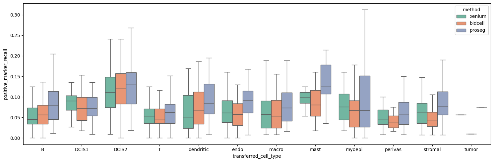
The negative_marker_avoidance score quantifies the extent to which a focal cell expresses positive markers of neighboring cell types, and thus reflects contamination. Overall, contamination levels are low; however, increased contamination is observed for DCIS1.
[53]:
def box_strip_plot_per_celltype(
st_dict,
feature,
celltype_col="transferred_cell_type",
q=1.0,
figsize=(15, 5),
palette="Set2",
):
dfs = []
for method, st in st_dict.items():
obs = st.sdata.tables["table"].obs
tmp = obs[[celltype_col, feature]].copy()
tmp = tmp[tmp[celltype_col].notna()]
tmp["method"] = method
dfs.append(tmp)
df = pd.concat(dfs, ignore_index=True).dropna(subset=[celltype_col, feature])
if q < 1:
df = df[df[feature] <= df[feature].quantile(q)]
fig, ax = plt.subplots(figsize=figsize)
sns.boxplot(
data=df,
x=celltype_col,
y=feature,
hue="method",
showcaps=True,
showfliers=False,
palette=palette,
ax=ax,
)
sns.stripplot(
data=df,
x=celltype_col,
y=feature,
hue="method",
dodge=True,
jitter=0.2,
alpha=0.6,
linewidth=0,
palette=palette,
ax=ax,
)
# avoid duplicate legends
handles, labels = ax.get_legend_handles_labels()
ax.legend(handles, labels, title="method")
ax.tick_params(axis="x", rotation=45)
ax.set_xlabel("Cell type")
ax.set_ylabel(feature)
ax.legend(title="method", bbox_to_anchor=(1.02, 1), loc="upper left")
fig.tight_layout()
plt.show()
[54]:
box_strip_plot_per_celltype(st_dict, "negative_marker_avoidance")
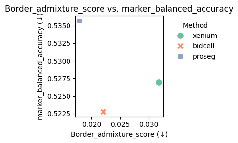
In contrast, the positive_marker_recall score measures how consistently a cell expresses markers expected for its assigned cell type.
[55]:
boxplot_per_celltype(st_dict, "positive_marker_recall")
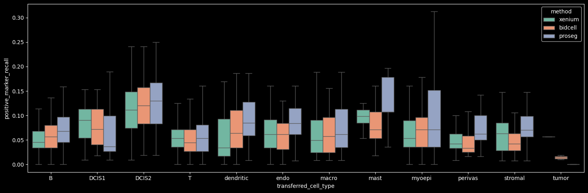
These metrics are most informative when considered jointly. For example, we plot the mean negative_marker_avoidance (a supervised measure of contamination) against the mean border_admixture_score, an unsupervised contamination metric. In this combined view, we can see that the two transcript-informed methods, BIDCell and Proseg, show marginally less contamination than the transcript-agnostic segmentation method from Xenium.
[56]:
rows = []
for _method, st in st_dict.items():
corr_ncv_vs_center = st.sdata.tables["table"].obs["border_admixture_score"].median()
negative_F1 = st.sdata.tables["table"].obs["negative_marker_avoidance"].median()
rows.append(
{
"Method": _method,
"Border_admixture_score": corr_ncv_vs_center,
"negative_marker_avoidance": negative_F1,
}
)
results_df = pd.DataFrame(rows)
fig, ax = plt.subplots(figsize=(4, 3))
sns.scatterplot(
data=results_df,
x="Border_admixture_score",
y="negative_marker_avoidance",
hue="Method",
style="Method",
s=100,
palette="Set2",
ax=ax,
)
ax.set_xlabel("Border_admixture_score (↓)")
ax.set_ylabel("negative_marker_avoidance (↓)")
ax.set_title("Border_admixture_score vs. negative_marker_avoidance")
ax.set_xlim(0, 1)
ax.set_ylim(0, 1.1)
legend = ax.legend(title="Method", frameon=False, bbox_to_anchor=(1.05, 1), loc="upper left")
fig.tight_layout()
plt.show()
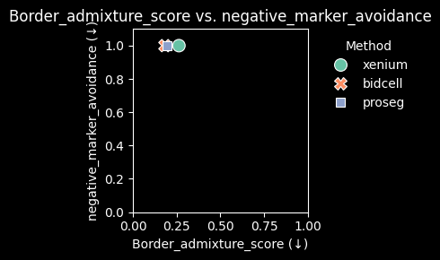
Neighborhood contamination
Marker purity summarizes how well a cell matches its own markers and avoids neighborhood-relevant negatives. In many cases, we also want to quantify
how many contaminating transcripts are present per cell and
which neighboring cell types contribute to this signal. We therefore compute neighborhood contamination.
[57]:
for method, st in st_dict.items():
per_cell_df, _, cont_bin, _ = st.sp.neighbor_contamination(
cell_type_key="transferred_cell_type", markers=markers[method]
)
Among the evaluated methods, Proseg yields the smallest number of cells showing detectable contamination. Across methods, the highest number of cells affected by contamination are found among T and B cells.
[58]:
methods_df = []
for method, st in st_dict.items():
obs = st.sdata.tables["table"].obs
counts = obs.loc[obs["contamination_counts"] > 0, "transferred_cell_type"].value_counts().rename(method)
methods_df.append(counts)
merged = pd.concat(methods_df, axis=1)
merged
[58]:
| xenium | bidcell | proseg | |
|---|---|---|---|
| transferred_cell_type | |||
| T | 27 | 38 | 12 |
| DCIS1 | 9 | 7 | 4 |
| DCIS2 | 8 | 3 | 5 |
| macro | 8 | 14 | 8 |
| B | 7 | 5 | 1 |
| dendritic | 5 | 4 | 4 |
| stromal | 5 | 6 | 4 |
| endo | 1 | 5 | 2 |
| mast | 1 | 2 | 6 |
| myoepi | 1 | 2 | 2 |
| perivas | 1 | 2 | 1 |
| tumor | 0 | 0 | 0 |
Proseg contains the lowest number of T cells and B cells, and hence the overall contamination will be lower than for the other methods.
[59]:
methods_df = []
for method, st in st_dict.items():
obs = st.sdata.tables["table"].obs
counts = obs["transferred_cell_type"].value_counts().rename(method)
methods_df.append(counts)
pd.concat(methods_df, axis=1).fillna(0)
[59]:
| xenium | bidcell | proseg | |
|---|---|---|---|
| transferred_cell_type | |||
| T | 192 | 198 | 165 |
| DCIS2 | 160 | 151 | 149 |
| B | 94 | 84 | 67 |
| stromal | 59 | 66 | 70 |
| macro | 51 | 42 | 46 |
| endo | 38 | 40 | 37 |
| myoepi | 33 | 34 | 25 |
| dendritic | 31 | 30 | 21 |
| DCIS1 | 19 | 23 | 17 |
| perivas | 14 | 15 | 12 |
| mast | 12 | 11 | 13 |
| tumor | 1 | 2 | 1 |
It therefore makes sense to compute the percentage of cells per celltype affected by contamination.
[60]:
rows = []
for method, st in st_dict.items():
obs = st.sdata.tables["table"].obs
total = obs["transferred_cell_type"].value_counts()
contaminated = obs.loc[obs["contamination_counts"] > 0, "transferred_cell_type"].value_counts()
frac = (contaminated / total).rename(method)
rows.append(frac)
merged_frac = pd.concat(rows, axis=1).fillna(0)
merged_frac
[60]:
| xenium | bidcell | proseg | |
|---|---|---|---|
| transferred_cell_type | |||
| B | 0.074468 | 0.059524 | 0.014925 |
| DCIS1 | 0.473684 | 0.304348 | 0.235294 |
| DCIS2 | 0.050000 | 0.019868 | 0.033557 |
| T | 0.140625 | 0.191919 | 0.072727 |
| dendritic | 0.161290 | 0.133333 | 0.190476 |
| endo | 0.026316 | 0.125000 | 0.054054 |
| macro | 0.156863 | 0.333333 | 0.173913 |
| mast | 0.083333 | 0.181818 | 0.461538 |
| myoepi | 0.030303 | 0.058824 | 0.080000 |
| perivas | 0.071429 | 0.133333 | 0.083333 |
| stromal | 0.084746 | 0.090909 | 0.057143 |
| tumor | 0.000000 | 0.000000 | 0.000000 |
[61]:
import matplotlib.pyplot as plt
import seaborn as sns
df_long = merged_frac.reset_index().melt(
id_vars="transferred_cell_type", var_name="Method", value_name="fraction_contaminated"
)
fig, ax = plt.subplots(figsize=(6, 4))
sns.barplot(
data=df_long,
x="transferred_cell_type",
y="fraction_contaminated",
hue="Method",
ax=ax,
)
ax.set_ylabel("Fraction of contaminated cells")
ax.set_xlabel("Cell type")
ax.set_title("Contamination per cell type (normalized)")
plt.xticks(rotation=45)
plt.tight_layout()
plt.show()
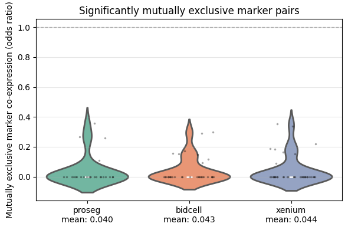
The spatial plot below shows the number of contaminating transcripts in each cell.
[62]:
def plot_feature_labels(sdata, method, feature, axes, i):
labels = sdata.tables["table"].obs["transferred_celltype_plot"].unique().astype(str).tolist()
cols = [col_celltype[lab] for lab in labels]
sdata.tables["table"].obs["region"] = "cell_boundaries"
sdata.set_table_annotates_spatialelement("table", region="cell_boundaries")
sdata.pl.render_shapes(
"cell_boundaries",
color="transferred_celltype_plot",
palette=cols,
groups=labels,
outline_color="white",
outline_width=0.5,
).pl.show(ax=axes[0, i], title=f"{method}:Cell boundaries colored by cell type", coordinate_systems="global")
sdata.pl.render_shapes(
"cell_boundaries",
color=feature,
outline_color="white",
outline_width=0.5,
).pl.show(ax=axes[1, i], title=f"{method}: {feature}", coordinate_systems="global")
[63]:
fig, axes = plt.subplots(2, 3, figsize=(15, 10), constrained_layout=True)
axes = np.atleast_2d(axes)
for i, (method, st) in enumerate(st_dict.items()):
plot_feature_labels(st.sdata, method, "contamination_counts", axes, i)
WARNING render_shapes: Found 168 NaN values in color data. These observations will be colored with the 'na_color'.
WARNING render_shapes: Found 174 NaN values in color data. These observations will be colored with the 'na_color'.
WARNING render_shapes: Found 234 NaN values in color data. These observations will be colored with the 'na_color'.
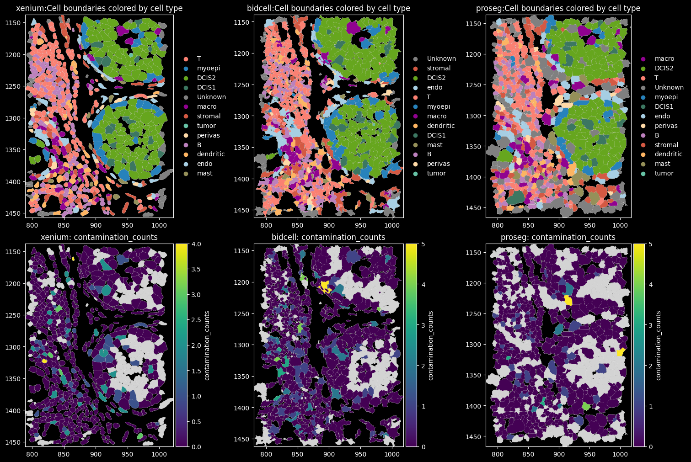
The heatmap below summarizes contamination strength for each source–target cell-type pair. Each entry represents the mean contamination strength across all evaluable target cells of the given target cell type, where the source-specific contamination strength is computed as the fraction of transcripts in the target cell that correspond to contamination-relevant markers of the source cell type.
The bubble plot illustrates the contamination strength (bubble color) and the number of evaluable target cells (bubble size).
[64]:
import matplotlib.pyplot as plt
import pandas as pd
import seaborn as sns
from matplotlib.colors import Normalize
vmax = max(st.sdata.tables["table"].uns["contamination_strength_matrix"].max().max() for st in st_dict.values())
norm = Normalize(vmin=0, vmax=vmax)
cell_type_order = list(next(iter(st_dict.values())).sdata.tables["table"].uns["contamination_strength_matrix"].columns)
fig, axes = plt.subplots(1, 3, figsize=(15, 5), constrained_layout=True)
for i, (method, st) in enumerate(st_dict.items()):
cont_strength = st.sdata.tables["table"].uns["contamination_strength_matrix"]
cont_n = st.sdata.tables["table"].uns["contamination_evaluable_cells_matrix"]
# Force same source/target order and include missing rows/columns.
cont_strength = cont_strength.reindex(
index=cell_type_order,
columns=cell_type_order,
)
cont_n = cont_n.reindex(
index=cell_type_order,
columns=cell_type_order,
)
plot_df = (
cont_strength.stack(dropna=False)
.rename("contamination_strength")
.reset_index()
.rename(columns={"level_0": "source", "level_1": "target"})
)
plot_df["n_evaluable"] = cont_n.stack(dropna=False).values
plot_df = plot_df.dropna(subset=["n_evaluable"])
plot_df["target"] = pd.Categorical(
plot_df["target"],
categories=cell_type_order,
ordered=True,
)
plot_df["source"] = pd.Categorical(
plot_df["source"],
categories=cell_type_order,
ordered=True,
)
sns.scatterplot(
data=plot_df,
x="target",
y="source",
size="n_evaluable",
hue="contamination_strength",
sizes=(20, 600),
palette="Reds",
hue_norm=norm,
edgecolor="black",
legend=False,
ax=axes[i],
)
axes[i].set_title(method, fontsize=12)
axes[i].set_xlabel("Target Cell Type")
axes[i].set_xlim(-0.5, len(cell_type_order) - 0.5)
axes[i].set_ylim(len(cell_type_order) - 0.5, -0.5)
axes[i].set_xticks(range(len(cell_type_order)))
axes[i].set_xticklabels(cell_type_order, rotation=45, ha="right")
axes[i].set_yticks(range(len(cell_type_order)))
if i == 0:
axes[i].set_ylabel("Source Cell Type")
axes[i].set_yticklabels(cell_type_order)
else:
axes[i].set_ylabel("")
axes[i].set_yticklabels([])
plt.show()
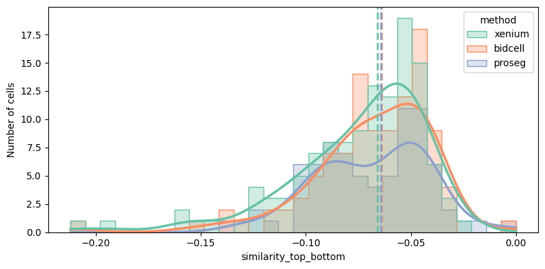
Mutually exclusive co-expression rate (MECR)
The mutually exclusive co-expression rate (MECR) is a measure for whether combinations of positive and negative markers (computed with a more stringent setting to increase mutual exclusivity, vote_frac_pos=0.3) co-occur less often than expected under independence (using Fisher’s exact test). By conditioning on the marginal detection frequencies of each gene, Fisher’s exact test does not favor methods with low overall transcript counts.
[65]:
markers = {}
for method, st in st_dict.items():
markers[method] = st.markers_from_reference(
adata_ref,
ref_cell_type="celltype_major",
min_pos_frac=0.3,
ref_raw_counts_layer="raw",
n_jobs=16,
)
mecr = st.sp.mutually_exclusive_coexpression_rate(
markers=markers[method],
)
Across all methods, positive and negative markers co-occur less frequently than expected under independence, indicating a consistent depletion of co-expression. Although the differences are minor, Proseg shows the strongest depletion of co-expression of positive and negative markers.
[66]:
rows = []
for method, st in st_dict.items():
tbl = st.sdata.tables["table"]
mecr_df = tbl.uns["mutually_exclusive_coexpression_rate"]
# Filter significant, finite odds ratios and p-values
df_sig = mecr_df[
mecr_df["odds_ratio"].notna()
& np.isfinite(mecr_df["odds_ratio"])
& mecr_df["pvalue"].notna()
& np.isfinite(mecr_df["pvalue"])
& (mecr_df["pvalue"] < 0.05)
]
# Build rows
rows.extend({"method": str(method), "Fisher_OR": np.log2(row["odds_ratio"])} for _, row in df_sig.iterrows())
df = pd.DataFrame(rows)
median_order = df.groupby("method")["Fisher_OR"].median().sort_values().index.tolist()
medians = df.groupby("method")["Fisher_OR"].median().reindex(median_order)
xtick_labels = [f"{m}\nmedian:({medians[m]:.2f})" for m in median_order]
plt.figure(figsize=(6, 4))
ax = sns.violinplot(
data=df,
x="method",
y="Fisher_OR",
order=median_order,
palette="Set2",
linewidth=2,
)
sns.stripplot(
data=df,
x="method",
y="Fisher_OR",
order=median_order,
color="black",
size=2.5,
alpha=0.35,
jitter=0.25,
ax=ax,
)
# Reference line: OR = 1
ax.axhline(0, ls="--", lw=1, color="gray", alpha=0.6)
ax.set_xticklabels(xtick_labels)
ax.set_ylabel("log2 Fisher odds ratio")
ax.set_xlabel("")
ax.set_title("Significant associations among candidate mutually exclusive marker pairs")
plt.grid(axis="y", alpha=0.3)
plt.tight_layout()
plt.show()
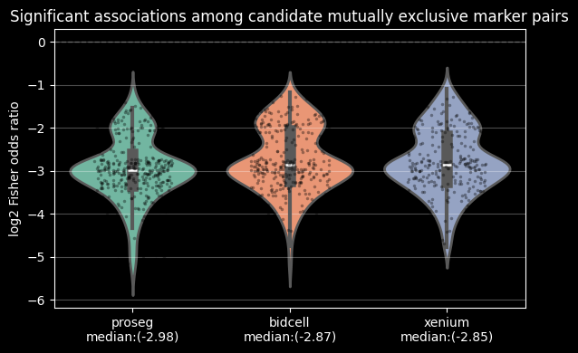
3D Volume Module#
The volume (vl) accessor provides metrics to assess how well a segmentation method resolves cell overlaps in 3D. Spatial transcriptomics tissue sections have a finite thickness (~4–10 µm), so cells can overlap along the z-dimension and 2D segmentation methods may introduce mixing by assigning transcripts from overlapping cells to the same mask. In this module, we introduce metrics to quantify sensitivity to 3D overlap and evaluate how well quasi-3D methods (e.g. Proseg) disentangle
transcripts from overlapping cells.
For a detailed description of this module, please refer to this tutorial.
Top-bottom z consistency
To detect potential z-overlap mixing within segmented cells, we split each cell’s transcripts into bottom/top z-quantiles (q=0.30), compute log-normalized gene profiles for both parts, and report their cosine similarity (NaN if either part has <10 transcripts or <5 genes).
[67]:
for _method, st in st_dict.items():
_cos_sim = st.vl.similarity_top_bottom()
Proseg 2 shows the highest expression similarity between top and bottom plane both overall and on a cell type level. This is also true for cell types, for which proseg has a lower per-cell transcript counts such as myoepithelial and DCIS2 cells.
The other three methods have peaks at zero, which means that top and bottom parts have completely different gene compositions (genes present in one are essentially absent in the other).
[68]:
feature = ["similarity_top_bottom"]
density_plot_feature(st_dict, feature)
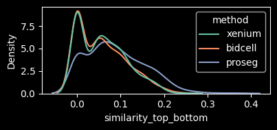
[69]:
boxplot_per_celltype(st_dict, "similarity_top_bottom")
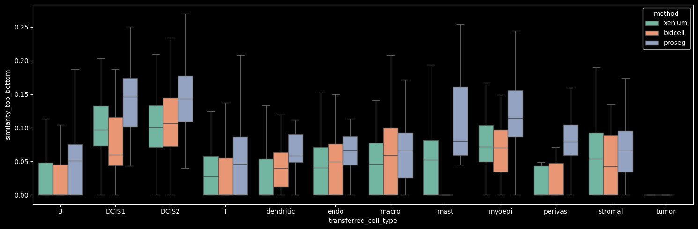
In volume.ipynb, we explore the distribution of transcripts along the z-dimension in more depth and put it into context with ovrlpy, a package for detecting 3D overlap in spatial transcriptomics.
Point statistic metrics#
The point statistics (ps) module is designed to compare the distribution of a set of transcripts in the cell relative to its cell centroid or cell border. The idea is to compute the distances of the transcripts to a reference point in the cell, either the cell centroid or the cell boundaries and aggregate this measure per transcript id.
distance to membrane metric
In this metric we compute the distance to the segmented cell membrane of each transcript coordinate and aggregate this metric per transcript id as mean.
[70]:
plt.style.use("dark_background")
def plot_metric(sdata, boundary_key, method, metric, genes, ax):
sdata_plot = sd.deepcopy(sdata)
sdata_plot["table"] = sdata_plot["table"][(sdata_plot["table"].obs[metric].notna())]
sdata_plot.tables["table"].obs["region"] = boundary_key
sdata_plot.set_table_annotates_spatialelement("table", region=boundary_key)
sdata_plot.pl.render_shapes(
element="nucleus_boundaries",
fill_alpha=0.2,
outline_alpha=1.0,
outline_width=0.5,
outline_color="black",
).pl.render_shapes(
element="cell_boundaries",
color=metric,
cmap="viridis",
fill_alpha=0.5,
outline_alpha=1.0,
outline_width=0.5,
outline_color="black",
).pl.render_points(
"transcripts",
color="feature_name",
groups=genes,
palette=["red"] * len(genes),
).pl.show(ax=ax, title="Cell/nuclei seg. for " + method + " " + metric, colorbar=True)
return fig, axes
First, we compute both the average distance to the cell membrane across all previously defined negative and positive markers for the cell type “DCIS1”.
[71]:
border_distance_negative = {}
border_distance_positive = {}
for method, st in st_dict.items():
border_distance_negative[method] = st.ps.distance_to_membrane(
markers[method]["DCIS1"]["negative"],
cell_type_key="transferred_celltype_plot",
cell_type_query=["DCIS1"],
restrict_to_within_boundary=True,
inplace=False,
)
border_distance_positive[method] = st.ps.distance_to_membrane(
markers[method]["DCIS1"]["positive"],
cell_type_key="transferred_celltype_plot",
restrict_to_within_boundary=True,
cell_type_query=["DCIS1"],
inplace=False,
)
[72]:
keys = []
values = []
for key, df in border_distance_negative.items():
for val in df["distance_to_cell_membrane_norm_165_genes"]:
keys.append(key)
values.append(val)
result_negative = pd.DataFrame({"method": keys, "distance": values, "marker": "negative"})
keys = []
values = []
for key, df in border_distance_positive.items():
for val in df["distance_to_cell_membrane_norm_80_genes"]:
keys.append(key)
values.append(val)
result_positive = pd.DataFrame({"method": keys, "distance": values, "marker": "positive"})
[73]:
result = pd.concat([result_negative, result_positive])
result = result.dropna()
[74]:
plt.figure(figsize=(6, 4))
ax = sns.violinplot(
data=result,
x="method",
y="distance",
hue="marker",
palette="Set2",
linewidth=2,
)
ax.set_ylabel("distance to membrane")
ax.set_xlabel("")
ax.set_title("Distance to membrane across cells for DCIS1")
plt.grid(axis="y", alpha=0.3)
plt.tight_layout()
plt.show()
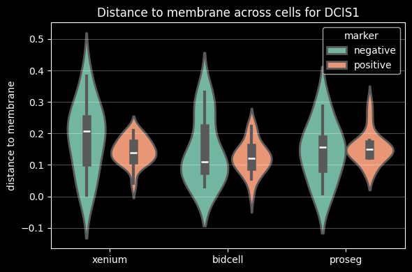
We can plot now the distance to membrane for the positive and negative markers across the different segmentation algorithms and for the cell type “DCIS1”.
We can also run the method inplace and plot the results in space
[75]:
for _method, st in st_dict.items():
st.ps.distance_to_membrane(
markers[method]["DCIS1"]["negative"],
cell_type_key="transferred_celltype_plot",
cell_type_query=["DCIS1"],
restrict_to_within_boundary=True,
inplace=True,
)
[76]:
fig, axes = plt.subplots(1, 3, figsize=(15, 10), constrained_layout=True)
for i, (method, st) in enumerate(st_dict.items()):
plot_metric(
st.sdata,
"cell_boundaries",
method,
"distance_to_cell_membrane_norm_165_genes",
markers[method]["DCIS1"]["negative"][:20],
axes[i],
)
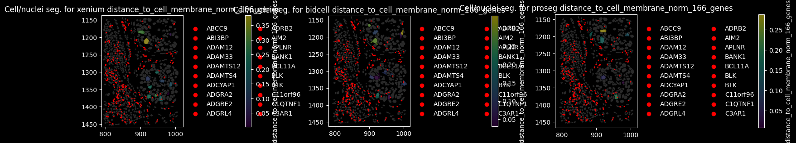
We can identify cells in which the distribution of negative markers is clearly more skewed than for thers and that these values differ again greatly between the segmentation algorithms.
Metrics orthogonolisation#
In order to look at the co-linearity of the computed metrics, we will compute the correlation matrix (scaled covariance matrix) of all the metrics. Since the directionality (positively or negatively correlated) does not matter, we take the absolute value of the correlation coefficient as our orthogonality metric. Like this, we can visualise which metrics correlate
[77]:
# code adapted from claude.ai
for method, st in st_dict.items():
df = st.sdata.tables["table"].obs
df_numeric = df.select_dtypes(include="number")
df = pd.DataFrame(df_numeric, columns=df_numeric.columns, index=df_numeric.index)
# correlation does not work with NA values. Fill NA with columnwise mean
df = df.apply(lambda x: x.fillna(x.mean()), axis=0)
correlation_matrix = df.corr()
# take absolute value instead - sign is not important, only co-linearity
correlation_matrix = correlation_matrix.abs()
plt.figure(figsize=(10, 8))
sns.heatmap(
correlation_matrix,
annot=False,
cmap="coolwarm",
center=0,
square=True,
linewidths=0.5,
cbar_kws={"shrink": 0.8},
vmin=0,
vmax=1,
xticklabels=correlation_matrix.columns,
yticklabels=correlation_matrix.columns,
)
plt.xticks(fontsize=7)
plt.yticks(fontsize=7)
plt.title(f"Absolute Correlation Matrix Heatmap {method}")
plt.tight_layout()
plt.show()
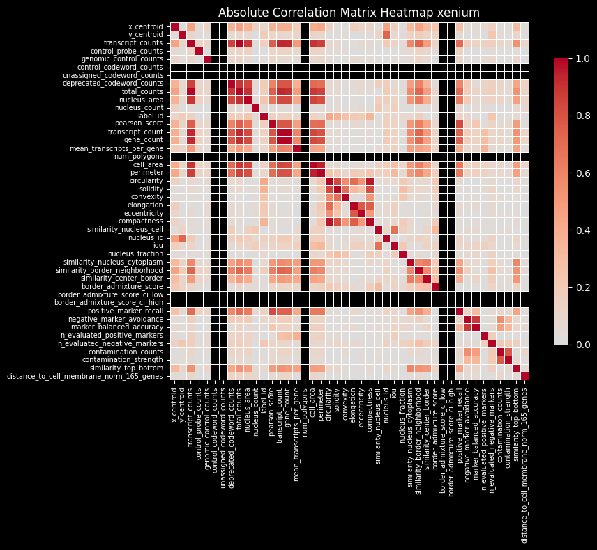
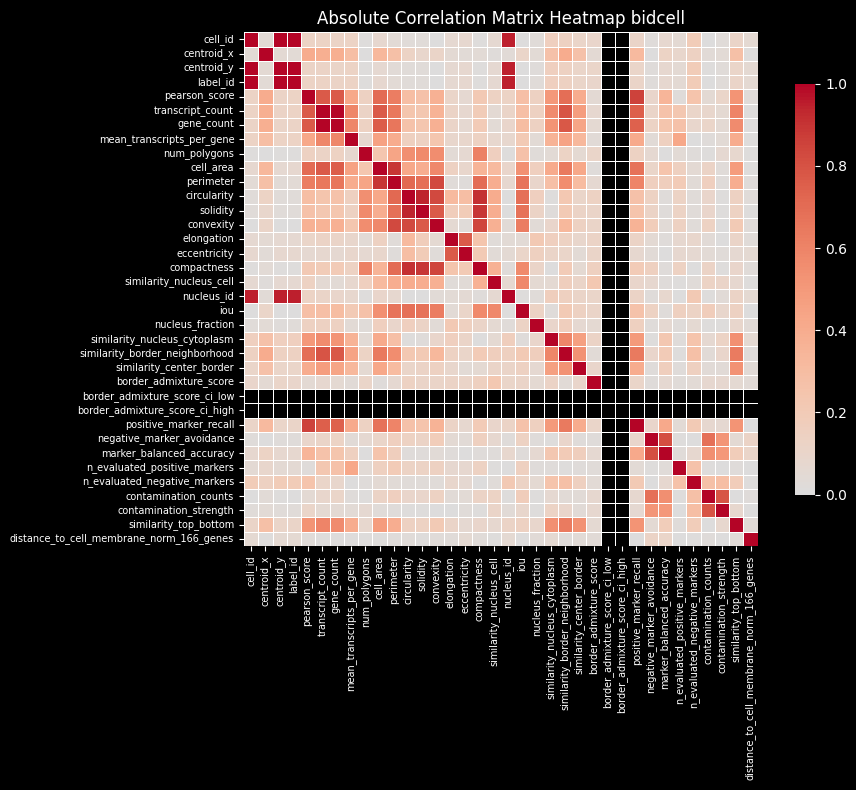
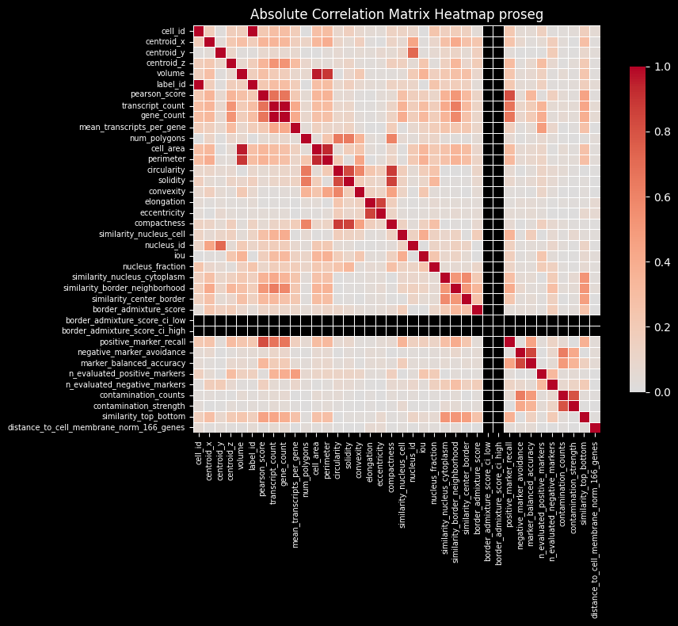
There are quite some metrics which correlate with the segmented cell area, such as total counts of all transcripts and metrics related to this. We note as well that the correlation of metrics differs between algorithms.
Session Info#
[78]:
print(sd.__version__) # spatialdata
print(spatialdata_plot.__version__)
0.8.0
0.4.0